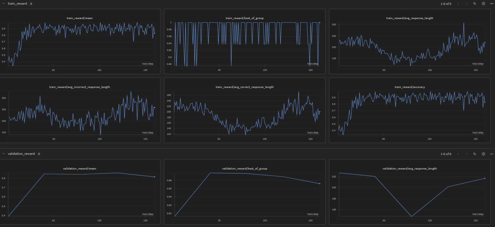

Reinforcement Learning from Human Feedback (RLHF)#
This tutorial provides a comprehensive overview on RLHF-based techniques implemented in phyagi-sdk. The explanations and examples are designed to help you understand how to use these techniques effectively, and based on the following scripts:
Note: The code snippets provided in this guide highlight essential sections of the scripts for better understanding. For the complete implementation, refer to the linked scripts above.
Resources#
All examples use the Phi‑3‑mini‑4k‑instruct checkpoint and the GSM8K dataset. You can download them from either storage account:
Group Relative Policy Optimization (GRPO)#
GRPO is an RLHF algorithm that trains a policy from relative rankings inside a group of candidate completions instead of scalar rewards.
How it works#
Generate k completions for the same prompt.
A human (or heuristic) ranks the completions best to worst.
Convert the ranking into a pair‑wise preference matrix and compute relative advantages.
Update the policy with a PPO‑style objective that boosts the log‑probability of higher ranked completions while suppressing lower ranked ones.
Because each ranking yields k × (k‑1)/2 preference pairs, GRPO extracts far denser feedback than scalar reward PPO for the same annotation effort.
PPO |
GRPO |
|
|---|---|---|
Feedback |
scalar reward |
ranking of k completions |
Signal density |
1 value / prompt |
k(k‑1)/2 pairwise preferences / prompt |
Annotation cost |
moderate |
identical |
[ ]:
import os
import datasets
from transformers import AutoTokenizer
from phyagi.datasets.rl.chat.chat_dataset import ChatDataset
from phyagi.datasets.rl.rl_data_collator import RewardDataCollator
from phyagi.rl.tuners.grpo.grpo_config import RayGRPOConfig
from phyagi.rl.tuners.grpo.grpo_tuner import RayGRPOTuner
from phyagi.rl.models.actor_config import ActorConfig
from phyagi.rl.rollout.vllm_worker_config import VLLMWorkerConfig
from phyagi.rl.rewards.gsm8k import GSM8kReward
os.environ["WANDB_MODE"] = "disabled"
actor_config = ActorConfig(
model={"pretrained_model_name_or_path": "/home/gderosa/models/Phi-3-mini-4k-instruct"},
optimizer={
"betas": [0.9, 0.999],
"weight_decay": 0.01,
},
scheduler={
"warmup_num_steps": 1,
"warmup_max_lr": 5.0e-6,
}
)
rollout_config = VLLMWorkerConfig(
prompt_length=256,
response_length=512,
dtype="bfloat16",
gpu_memory_utilization=0.5,
enforce_eager=False,
enable_prefix_caching=True,
sampling_params={"temperature": 1.0},
)
tuning_args = RayGRPOConfig(
output_dir="/tmp/grpo_gsm8k",
n_nodes=1,
n_gpus_per_node=4,
max_steps=1,
train_batch_size=16,
group_size=8,
train_max_micro_batch_size_per_gpu=1,
actor=actor_config,
rollout=rollout_config,
)
tokenizer = AutoTokenizer.from_pretrained("microsoft/Phi-3-mini-128k-instruct")
def _extract_answer(row):
row["answer"] = row["reward_model"]["ground_truth"]
return row
dataset = datasets.load_dataset(
"parquet",
data_files={
"train": "/home/gderosa/datasets/gsm8k/train.parquet",
"test": "/home/gderosa/datasets/gsm8k/test.parquet"
}
)
dataset = dataset.map(_extract_answer)
rewards = {
"math_verifier": GSM8kReward(format_score=0.0, correct_score=1.0)
}
train_dataset = ChatDataset(
dataset["train"],
tokenizer=tokenizer,
messages_column_name="prompt",
ground_truth_column_name="answer",
max_length=tuning_args.rollout.prompt_length,
filter_max_length=True,
)
eval_dataset = ChatDataset(
dataset["test"],
tokenizer=tokenizer,
messages_column_name="prompt",
ground_truth_column_name="answer",
max_length=tuning_args.rollout.prompt_length,
)
data_collator = RewardDataCollator(reward_names=list(rewards.keys()))
tuner = RayGRPOTuner(
args=tuning_args,
tokenizer=tokenizer,
data_collator=data_collator,
train_dataset=train_dataset,
eval_dataset=eval_dataset,
rewards=rewards,
)
tuner.train()
2025-05-26 13:43:21,662 INFO worker.py:1888 -- Started a local Ray instance.
[phyagi] [2025-05-26 13:43:22,793] [INFO] [grpo_tuner.py:107:__init__] Tuning arguments: {'output_dir': '/tmp/grpo_gsm8k', 'n_nodes': 1, 'n_gpus_per_node': 4, 'do_final_eval': True, 'eval_before_training': False, 'epochs': None, 'max_steps': 1, 'log_n_eval_completions': 20, 'save_steps': -1, 'save_final_checkpoint': True, 'eval_steps': 0, 'seed': 1, 'group_size': 8, 'train_batch_size': 16, 'train_max_micro_batch_size_per_gpu': 1, 'adv_length_bias_correction': True, 'num_policy_updates_per_batch': 1, 'kl_coeff': 0.001, 'epsilon_low': 0.2, 'epsilon_high': 0.2, 'actor': {'model': {'pretrained_model_name_or_path': '/home/gderosa/models/Phi-3-mini-4k-instruct'}, 'use_meta_tensor': False, 'optimizer': {'betas': [0.9, 0.999], 'weight_decay': 0.01}, 'scheduler': {'warmup_num_steps': 1, 'warmup_max_lr': 5e-06}, 'gradient_clipping': 1.0, 'manual_offload': False, 'fsdp_offload': False, 'activation_checkpointing': False, 'dtype': 'bfloat16', 'adam_8bit': False}, 'rollout': {'prompt_length': 256, 'response_length': 512, 'tensor_parallel_size': 1, 'offload': True, 'dtype': 'bfloat16', 'gpu_memory_utilization': 0.5, 'swap_space': 64.0, 'enforce_eager': False, 'hf_overrides': None, 'enable_chunked_prefill': True, 'enable_prefix_caching': True, 'preemption_mode': None, 'max_num_batched_tokens': None, 'max_num_seqs': None, 'kv_cache_dtype': 'auto', 'sampling_params': {'temperature': 1.0}, 'disable_log_stats': True, 'extra_kwargs': None}, 'dataloader_shuffle': True, 'dataloader_num_workers': 1, 'reward_num_workers': 1, 'wandb': {'config': {'tuning_args': {'output_dir': '/tmp/grpo_gsm8k', 'n_nodes': 1, 'n_gpus_per_node': 4, 'do_final_eval': True, 'eval_before_training': False, 'epochs': None, 'max_steps': 1, 'log_n_eval_completions': 20, 'save_steps': -1, 'save_final_checkpoint': True, 'eval_steps': 0, 'seed': 1, 'group_size': 8, 'train_batch_size': 16, 'train_max_micro_batch_size_per_gpu': 1, 'adv_length_bias_correction': True, 'num_policy_updates_per_batch': 1, 'kl_coeff': 0.001, 'epsilon_low': 0.2, 'epsilon_high': 0.2, 'actor': {'model': {'pretrained_model_name_or_path': '/home/gderosa/models/Phi-3-mini-4k-instruct'}, 'use_meta_tensor': False, 'optimizer': {'betas': [0.9, 0.999], 'weight_decay': 0.01}, 'scheduler': {'warmup_num_steps': 1, 'warmup_max_lr': 5e-06}, 'gradient_clipping': 1.0, 'manual_offload': False, 'fsdp_offload': False, 'activation_checkpointing': False, 'dtype': 'bfloat16', 'adam_8bit': False}, 'rollout': {'prompt_length': 256, 'response_length': 512, 'tensor_parallel_size': 1, 'offload': True, 'dtype': 'bfloat16', 'gpu_memory_utilization': 0.5, 'swap_space': 64.0, 'enforce_eager': False, 'hf_overrides': None, 'enable_chunked_prefill': True, 'enable_prefix_caching': True, 'preemption_mode': None, 'max_num_batched_tokens': None, 'max_num_seqs': None, 'kv_cache_dtype': 'auto', 'sampling_params': {'temperature': 1.0}, 'disable_log_stats': True, 'extra_kwargs': None}, 'dataloader_shuffle': True, 'dataloader_num_workers': 1, 'reward_num_workers': 1, 'wandb': {}}}}} [GPU memory allocated: 0.26 GB (1.0% of device)]
[phyagi] [2025-05-26 13:43:22,793] [INFO] [grpo_tuner.py:107:__init__] Tuning arguments: {'output_dir': '/tmp/grpo_gsm8k', 'n_nodes': 1, 'n_gpus_per_node': 4, 'do_final_eval': True, 'eval_before_training': False, 'epochs': None, 'max_steps': 1, 'log_n_eval_completions': 20, 'save_steps': -1, 'save_final_checkpoint': True, 'eval_steps': 0, 'seed': 1, 'group_size': 8, 'train_batch_size': 16, 'train_max_micro_batch_size_per_gpu': 1, 'adv_length_bias_correction': True, 'num_policy_updates_per_batch': 1, 'kl_coeff': 0.001, 'epsilon_low': 0.2, 'epsilon_high': 0.2, 'actor': {'model': {'pretrained_model_name_or_path': '/home/gderosa/models/Phi-3-mini-4k-instruct'}, 'use_meta_tensor': False, 'optimizer': {'betas': [0.9, 0.999], 'weight_decay': 0.01}, 'scheduler': {'warmup_num_steps': 1, 'warmup_max_lr': 5e-06}, 'gradient_clipping': 1.0, 'manual_offload': False, 'fsdp_offload': False, 'activation_checkpointing': False, 'dtype': 'bfloat16', 'adam_8bit': False}, 'rollout': {'prompt_length': 256, 'response_length': 512, 'tensor_parallel_size': 1, 'offload': True, 'dtype': 'bfloat16', 'gpu_memory_utilization': 0.5, 'swap_space': 64.0, 'enforce_eager': False, 'hf_overrides': None, 'enable_chunked_prefill': True, 'enable_prefix_caching': True, 'preemption_mode': None, 'max_num_batched_tokens': None, 'max_num_seqs': None, 'kv_cache_dtype': 'auto', 'sampling_params': {'temperature': 1.0}, 'disable_log_stats': True, 'extra_kwargs': None}, 'dataloader_shuffle': True, 'dataloader_num_workers': 1, 'reward_num_workers': 1, 'wandb': {'config': {'tuning_args': {'output_dir': '/tmp/grpo_gsm8k', 'n_nodes': 1, 'n_gpus_per_node': 4, 'do_final_eval': True, 'eval_before_training': False, 'epochs': None, 'max_steps': 1, 'log_n_eval_completions': 20, 'save_steps': -1, 'save_final_checkpoint': True, 'eval_steps': 0, 'seed': 1, 'group_size': 8, 'train_batch_size': 16, 'train_max_micro_batch_size_per_gpu': 1, 'adv_length_bias_correction': True, 'num_policy_updates_per_batch': 1, 'kl_coeff': 0.001, 'epsilon_low': 0.2, 'epsilon_high': 0.2, 'actor': {'model': {'pretrained_model_name_or_path': '/home/gderosa/models/Phi-3-mini-4k-instruct'}, 'use_meta_tensor': False, 'optimizer': {'betas': [0.9, 0.999], 'weight_decay': 0.01}, 'scheduler': {'warmup_num_steps': 1, 'warmup_max_lr': 5e-06}, 'gradient_clipping': 1.0, 'manual_offload': False, 'fsdp_offload': False, 'activation_checkpointing': False, 'dtype': 'bfloat16', 'adam_8bit': False}, 'rollout': {'prompt_length': 256, 'response_length': 512, 'tensor_parallel_size': 1, 'offload': True, 'dtype': 'bfloat16', 'gpu_memory_utilization': 0.5, 'swap_space': 64.0, 'enforce_eager': False, 'hf_overrides': None, 'enable_chunked_prefill': True, 'enable_prefix_caching': True, 'preemption_mode': None, 'max_num_batched_tokens': None, 'max_num_seqs': None, 'kv_cache_dtype': 'auto', 'sampling_params': {'temperature': 1.0}, 'disable_log_stats': True, 'extra_kwargs': None}, 'dataloader_shuffle': True, 'dataloader_num_workers': 1, 'reward_num_workers': 1, 'wandb': {}}}}} [GPU memory allocated: 0.26 GB (1.0% of device)] [GPU memory allocated: 0.26 GB (1.0% of device)]
[phyagi] [2025-05-26 13:43:22,793] [INFO] [grpo_tuner.py:107:__init__] Tuning arguments: {'output_dir': '/tmp/grpo_gsm8k', 'n_nodes': 1, 'n_gpus_per_node': 4, 'do_final_eval': True, 'eval_before_training': False, 'epochs': None, 'max_steps': 1, 'log_n_eval_completions': 20, 'save_steps': -1, 'save_final_checkpoint': True, 'eval_steps': 0, 'seed': 1, 'group_size': 8, 'train_batch_size': 16, 'train_max_micro_batch_size_per_gpu': 1, 'adv_length_bias_correction': True, 'num_policy_updates_per_batch': 1, 'kl_coeff': 0.001, 'epsilon_low': 0.2, 'epsilon_high': 0.2, 'actor': {'model': {'pretrained_model_name_or_path': '/home/gderosa/models/Phi-3-mini-4k-instruct'}, 'use_meta_tensor': False, 'optimizer': {'betas': [0.9, 0.999], 'weight_decay': 0.01}, 'scheduler': {'warmup_num_steps': 1, 'warmup_max_lr': 5e-06}, 'gradient_clipping': 1.0, 'manual_offload': False, 'fsdp_offload': False, 'activation_checkpointing': False, 'dtype': 'bfloat16', 'adam_8bit': False}, 'rollout': {'prompt_length': 256, 'response_length': 512, 'tensor_parallel_size': 1, 'offload': True, 'dtype': 'bfloat16', 'gpu_memory_utilization': 0.5, 'swap_space': 64.0, 'enforce_eager': False, 'hf_overrides': None, 'enable_chunked_prefill': True, 'enable_prefix_caching': True, 'preemption_mode': None, 'max_num_batched_tokens': None, 'max_num_seqs': None, 'kv_cache_dtype': 'auto', 'sampling_params': {'temperature': 1.0}, 'disable_log_stats': True, 'extra_kwargs': None}, 'dataloader_shuffle': True, 'dataloader_num_workers': 1, 'reward_num_workers': 1, 'wandb': {'config': {'tuning_args': {'output_dir': '/tmp/grpo_gsm8k', 'n_nodes': 1, 'n_gpus_per_node': 4, 'do_final_eval': True, 'eval_before_training': False, 'epochs': None, 'max_steps': 1, 'log_n_eval_completions': 20, 'save_steps': -1, 'save_final_checkpoint': True, 'eval_steps': 0, 'seed': 1, 'group_size': 8, 'train_batch_size': 16, 'train_max_micro_batch_size_per_gpu': 1, 'adv_length_bias_correction': True, 'num_policy_updates_per_batch': 1, 'kl_coeff': 0.001, 'epsilon_low': 0.2, 'epsilon_high': 0.2, 'actor': {'model': {'pretrained_model_name_or_path': '/home/gderosa/models/Phi-3-mini-4k-instruct'}, 'use_meta_tensor': False, 'optimizer': {'betas': [0.9, 0.999], 'weight_decay': 0.01}, 'scheduler': {'warmup_num_steps': 1, 'warmup_max_lr': 5e-06}, 'gradient_clipping': 1.0, 'manual_offload': False, 'fsdp_offload': False, 'activation_checkpointing': False, 'dtype': 'bfloat16', 'adam_8bit': False}, 'rollout': {'prompt_length': 256, 'response_length': 512, 'tensor_parallel_size': 1, 'offload': True, 'dtype': 'bfloat16', 'gpu_memory_utilization': 0.5, 'swap_space': 64.0, 'enforce_eager': False, 'hf_overrides': None, 'enable_chunked_prefill': True, 'enable_prefix_caching': True, 'preemption_mode': None, 'max_num_batched_tokens': None, 'max_num_seqs': None, 'kv_cache_dtype': 'auto', 'sampling_params': {'temperature': 1.0}, 'disable_log_stats': True, 'extra_kwargs': None}, 'dataloader_shuffle': True, 'dataloader_num_workers': 1, 'reward_num_workers': 1, 'wandb': {}}}}} [GPU memory allocated: 0.26 GB (1.0% of device)] [GPU memory allocated: 0.26 GB (1.0% of device)] [GPU memory allocated: 0.26 GB (1.0% of device)]
[phyagi] [2025-05-26 13:43:22,793] [INFO] [grpo_tuner.py:107:__init__] Tuning arguments: {'output_dir': '/tmp/grpo_gsm8k', 'n_nodes': 1, 'n_gpus_per_node': 4, 'do_final_eval': True, 'eval_before_training': False, 'epochs': None, 'max_steps': 1, 'log_n_eval_completions': 20, 'save_steps': -1, 'save_final_checkpoint': True, 'eval_steps': 0, 'seed': 1, 'group_size': 8, 'train_batch_size': 16, 'train_max_micro_batch_size_per_gpu': 1, 'adv_length_bias_correction': True, 'num_policy_updates_per_batch': 1, 'kl_coeff': 0.001, 'epsilon_low': 0.2, 'epsilon_high': 0.2, 'actor': {'model': {'pretrained_model_name_or_path': '/home/gderosa/models/Phi-3-mini-4k-instruct'}, 'use_meta_tensor': False, 'optimizer': {'betas': [0.9, 0.999], 'weight_decay': 0.01}, 'scheduler': {'warmup_num_steps': 1, 'warmup_max_lr': 5e-06}, 'gradient_clipping': 1.0, 'manual_offload': False, 'fsdp_offload': False, 'activation_checkpointing': False, 'dtype': 'bfloat16', 'adam_8bit': False}, 'rollout': {'prompt_length': 256, 'response_length': 512, 'tensor_parallel_size': 1, 'offload': True, 'dtype': 'bfloat16', 'gpu_memory_utilization': 0.5, 'swap_space': 64.0, 'enforce_eager': False, 'hf_overrides': None, 'enable_chunked_prefill': True, 'enable_prefix_caching': True, 'preemption_mode': None, 'max_num_batched_tokens': None, 'max_num_seqs': None, 'kv_cache_dtype': 'auto', 'sampling_params': {'temperature': 1.0}, 'disable_log_stats': True, 'extra_kwargs': None}, 'dataloader_shuffle': True, 'dataloader_num_workers': 1, 'reward_num_workers': 1, 'wandb': {'config': {'tuning_args': {'output_dir': '/tmp/grpo_gsm8k', 'n_nodes': 1, 'n_gpus_per_node': 4, 'do_final_eval': True, 'eval_before_training': False, 'epochs': None, 'max_steps': 1, 'log_n_eval_completions': 20, 'save_steps': -1, 'save_final_checkpoint': True, 'eval_steps': 0, 'seed': 1, 'group_size': 8, 'train_batch_size': 16, 'train_max_micro_batch_size_per_gpu': 1, 'adv_length_bias_correction': True, 'num_policy_updates_per_batch': 1, 'kl_coeff': 0.001, 'epsilon_low': 0.2, 'epsilon_high': 0.2, 'actor': {'model': {'pretrained_model_name_or_path': '/home/gderosa/models/Phi-3-mini-4k-instruct'}, 'use_meta_tensor': False, 'optimizer': {'betas': [0.9, 0.999], 'weight_decay': 0.01}, 'scheduler': {'warmup_num_steps': 1, 'warmup_max_lr': 5e-06}, 'gradient_clipping': 1.0, 'manual_offload': False, 'fsdp_offload': False, 'activation_checkpointing': False, 'dtype': 'bfloat16', 'adam_8bit': False}, 'rollout': {'prompt_length': 256, 'response_length': 512, 'tensor_parallel_size': 1, 'offload': True, 'dtype': 'bfloat16', 'gpu_memory_utilization': 0.5, 'swap_space': 64.0, 'enforce_eager': False, 'hf_overrides': None, 'enable_chunked_prefill': True, 'enable_prefix_caching': True, 'preemption_mode': None, 'max_num_batched_tokens': None, 'max_num_seqs': None, 'kv_cache_dtype': 'auto', 'sampling_params': {'temperature': 1.0}, 'disable_log_stats': True, 'extra_kwargs': None}, 'dataloader_shuffle': True, 'dataloader_num_workers': 1, 'reward_num_workers': 1, 'wandb': {}}}}} [GPU memory allocated: 0.26 GB (1.0% of device)] [GPU memory allocated: 0.26 GB (1.0% of device)] [GPU memory allocated: 0.26 GB (1.0% of device)] [GPU memory allocated: 0.26 GB (1.0% of device)]
[phyagi] [2025-05-26 13:43:22,793] [INFO] [grpo_tuner.py:107:__init__] Tuning arguments: {'output_dir': '/tmp/grpo_gsm8k', 'n_nodes': 1, 'n_gpus_per_node': 4, 'do_final_eval': True, 'eval_before_training': False, 'epochs': None, 'max_steps': 1, 'log_n_eval_completions': 20, 'save_steps': -1, 'save_final_checkpoint': True, 'eval_steps': 0, 'seed': 1, 'group_size': 8, 'train_batch_size': 16, 'train_max_micro_batch_size_per_gpu': 1, 'adv_length_bias_correction': True, 'num_policy_updates_per_batch': 1, 'kl_coeff': 0.001, 'epsilon_low': 0.2, 'epsilon_high': 0.2, 'actor': {'model': {'pretrained_model_name_or_path': '/home/gderosa/models/Phi-3-mini-4k-instruct'}, 'use_meta_tensor': False, 'optimizer': {'betas': [0.9, 0.999], 'weight_decay': 0.01}, 'scheduler': {'warmup_num_steps': 1, 'warmup_max_lr': 5e-06}, 'gradient_clipping': 1.0, 'manual_offload': False, 'fsdp_offload': False, 'activation_checkpointing': False, 'dtype': 'bfloat16', 'adam_8bit': False}, 'rollout': {'prompt_length': 256, 'response_length': 512, 'tensor_parallel_size': 1, 'offload': True, 'dtype': 'bfloat16', 'gpu_memory_utilization': 0.5, 'swap_space': 64.0, 'enforce_eager': False, 'hf_overrides': None, 'enable_chunked_prefill': True, 'enable_prefix_caching': True, 'preemption_mode': None, 'max_num_batched_tokens': None, 'max_num_seqs': None, 'kv_cache_dtype': 'auto', 'sampling_params': {'temperature': 1.0}, 'disable_log_stats': True, 'extra_kwargs': None}, 'dataloader_shuffle': True, 'dataloader_num_workers': 1, 'reward_num_workers': 1, 'wandb': {'config': {'tuning_args': {'output_dir': '/tmp/grpo_gsm8k', 'n_nodes': 1, 'n_gpus_per_node': 4, 'do_final_eval': True, 'eval_before_training': False, 'epochs': None, 'max_steps': 1, 'log_n_eval_completions': 20, 'save_steps': -1, 'save_final_checkpoint': True, 'eval_steps': 0, 'seed': 1, 'group_size': 8, 'train_batch_size': 16, 'train_max_micro_batch_size_per_gpu': 1, 'adv_length_bias_correction': True, 'num_policy_updates_per_batch': 1, 'kl_coeff': 0.001, 'epsilon_low': 0.2, 'epsilon_high': 0.2, 'actor': {'model': {'pretrained_model_name_or_path': '/home/gderosa/models/Phi-3-mini-4k-instruct'}, 'use_meta_tensor': False, 'optimizer': {'betas': [0.9, 0.999], 'weight_decay': 0.01}, 'scheduler': {'warmup_num_steps': 1, 'warmup_max_lr': 5e-06}, 'gradient_clipping': 1.0, 'manual_offload': False, 'fsdp_offload': False, 'activation_checkpointing': False, 'dtype': 'bfloat16', 'adam_8bit': False}, 'rollout': {'prompt_length': 256, 'response_length': 512, 'tensor_parallel_size': 1, 'offload': True, 'dtype': 'bfloat16', 'gpu_memory_utilization': 0.5, 'swap_space': 64.0, 'enforce_eager': False, 'hf_overrides': None, 'enable_chunked_prefill': True, 'enable_prefix_caching': True, 'preemption_mode': None, 'max_num_batched_tokens': None, 'max_num_seqs': None, 'kv_cache_dtype': 'auto', 'sampling_params': {'temperature': 1.0}, 'disable_log_stats': True, 'extra_kwargs': None}, 'dataloader_shuffle': True, 'dataloader_num_workers': 1, 'reward_num_workers': 1, 'wandb': {}}}}} [GPU memory allocated: 0.26 GB (1.0% of device)] [GPU memory allocated: 0.26 GB (1.0% of device)] [GPU memory allocated: 0.26 GB (1.0% of device)] [GPU memory allocated: 0.26 GB (1.0% of device)] [GPU memory allocated: 0.26 GB (1.0% of device)]
[phyagi] [2025-05-26 13:43:22,796] [INFO] [grpo_tuner.py:449:train] Starting training... [GPU memory allocated: 0.26 GB (1.0% of device)]
[phyagi] [2025-05-26 13:43:22,796] [INFO] [grpo_tuner.py:449:train] Starting training... [GPU memory allocated: 0.26 GB (1.0% of device)] [GPU memory allocated: 0.26 GB (1.0% of device)]
[phyagi] [2025-05-26 13:43:22,796] [INFO] [grpo_tuner.py:449:train] Starting training... [GPU memory allocated: 0.26 GB (1.0% of device)] [GPU memory allocated: 0.26 GB (1.0% of device)] [GPU memory allocated: 0.26 GB (1.0% of device)]
[phyagi] [2025-05-26 13:43:22,796] [INFO] [grpo_tuner.py:449:train] Starting training... [GPU memory allocated: 0.26 GB (1.0% of device)] [GPU memory allocated: 0.26 GB (1.0% of device)] [GPU memory allocated: 0.26 GB (1.0% of device)] [GPU memory allocated: 0.26 GB (1.0% of device)]
[phyagi] [2025-05-26 13:43:22,796] [INFO] [grpo_tuner.py:449:train] Starting training... [GPU memory allocated: 0.26 GB (1.0% of device)] [GPU memory allocated: 0.26 GB (1.0% of device)] [GPU memory allocated: 0.26 GB (1.0% of device)] [GPU memory allocated: 0.26 GB (1.0% of device)] [GPU memory allocated: 0.26 GB (1.0% of device)]
(pid=2125361) [2025-05-26 13:43:30,244] [INFO] [real_accelerator.py:239:get_accelerator] Setting ds_accelerator to cuda (auto detect)
(pid=2125361) INFO 05-26 13:43:32 [importing.py:53] Triton module has been replaced with a placeholder.
(pid=2125361) INFO 05-26 13:43:32 [__init__.py:239] Automatically detected platform cuda.
(RayGRPOWorker pid=2125361) [phyagi] [2025-05-26 13:43:34,765] [INFO] [ray_worker.py:64:configure_models] Initializing actor, reference (optional) and rollout models... [GPU memory allocated: 0.26 GB (1.0% of device)]
(pid=2125363) [2025-05-26 13:43:30,435] [INFO] [real_accelerator.py:239:get_accelerator] Setting ds_accelerator to cuda (auto detect) [repeated 3x across cluster]
(RayGRPOWorker pid=2125360) [phyagi] [2025-05-26 13:43:35,250] [INFO] [model.py:93:get_model] Loading pre-trained model: /home/gderosa/models/Phi-3-mini-4k-instruct
(RayGRPOWorker pid=2125360) [phyagi] [2025-05-26 13:43:35,250] [INFO] [model.py:94:get_model] Model configuration: {'torch_dtype': torch.float32, 'model_type': 'mixformer-sequential', 'trust_remote_code': True}
Loading checkpoint shards: 0%| | 0/2 [00:00<?, ?it/s]
Loading checkpoint shards: 50%|█████ | 1/2 [00:05<00:05, 5.51s/it]
Loading checkpoint shards: 0%| | 0/2 [00:00<?, ?it/s] [repeated 3x across cluster]
Loading checkpoint shards: 100%|██████████| 2/2 [00:08<00:00, 4.23s/it]
(RayGRPOWorker pid=2125360) [phyagi] [2025-05-26 13:43:44,034] [INFO] [model.py:93:get_model] Loading pre-trained model: /home/gderosa/models/Phi-3-mini-4k-instruct
(RayGRPOWorker pid=2125360) [phyagi] [2025-05-26 13:43:44,034] [INFO] [model.py:94:get_model] Model configuration: {'torch_dtype': None, 'model_type': 'mixformer-sequential', 'trust_remote_code': True}
(pid=2125363) INFO 05-26 13:43:32 [importing.py:53] Triton module has been replaced with a placeholder. [repeated 3x across cluster]
(pid=2125363) INFO 05-26 13:43:32 [__init__.py:239] Automatically detected platform cuda. [repeated 3x across cluster]
(RayGRPOWorker pid=2125363) [phyagi] [2025-05-26 13:43:34,766] [INFO] [ray_worker.py:64:configure_models] Initializing actor, reference (optional) and rollout models... [GPU memory allocated: 0.26 GB (1.0% of device)] [repeated 3x across cluster]
Loading checkpoint shards: 50%|█████ | 1/2 [00:05<00:05, 5.46s/it] [repeated 4x across cluster]
Loading checkpoint shards: 0%| | 0/2 [00:00<?, ?it/s] [repeated 4x across cluster]
Loading checkpoint shards: 100%|██████████| 2/2 [00:08<00:00, 4.29s/it] [repeated 3x across cluster]
(RayGRPOWorker pid=2125360) [phyagi] [2025-05-26 13:44:01,327] [INFO] [parallel_mixformer_sequential.py:126:apply_fsdp_mixformer_sequential] Fully Sharded Data Parallelism (FSDP) has been applied to model blocks.
(RayGRPOWorker pid=2125360) [phyagi] [2025-05-26 13:44:01,839] [INFO] [parallel_mixformer_sequential.py:129:apply_fsdp_mixformer_sequential] Fully Sharded Data Parallelism (FSDP) has been applied to model.
(RayGRPOWorker pid=2125361) INFO 05-26 13:44:01 [config.py:2968] Downcasting torch.float32 to torch.bfloat16.
(RayGRPOWorker pid=2125361) INFO 05-26 13:44:10 [config.py:717] This model supports multiple tasks: {'generate', 'embed', 'classify', 'reward', 'score'}. Defaulting to 'generate'.
(RayGRPOWorker pid=2125361) INFO 05-26 13:44:10 [config.py:1729] Disabling V1 multiprocessing for external launcher.
(RayGRPOWorker pid=2125361) INFO 05-26 13:44:10 [config.py:2003] Chunked prefill is enabled with max_num_batched_tokens=8192.
(RayGRPOWorker pid=2125363) INFO 05-26 13:44:01 [config.py:2968] Downcasting torch.float32 to torch.bfloat16. [repeated 3x across cluster]
(RayGRPOWorker pid=2125360) INFO 05-26 13:44:10 [config.py:717] This model supports multiple tasks: {'reward', 'generate', 'score', 'classify', 'embed'}. Defaulting to 'generate'.
(RayGRPOWorker pid=2125363) INFO 05-26 13:44:10 [config.py:717] This model supports multiple tasks: {'embed', 'score', 'reward', 'classify', 'generate'}. Defaulting to 'generate'.
(RayGRPOWorker pid=2125361) INFO 05-26 13:44:10 [core.py:58] Initializing a V1 LLM engine (v0.8.5.post1) with config: model='/tmp/grpo_gsm8k/initial_rollout', speculative_config=None, tokenizer='/tmp/grpo_gsm8k/initial_rollout', skip_tokenizer_init=False, tokenizer_mode=auto, revision=None, override_neuron_config=None, tokenizer_revision=None, trust_remote_code=False, dtype=torch.bfloat16, max_seq_len=768, download_dir=None, load_format=auto, tensor_parallel_size=1, pipeline_parallel_size=1, disable_custom_all_reduce=True, quantization=None, enforce_eager=False, kv_cache_dtype=auto, device_config=cuda, decoding_config=DecodingConfig(guided_decoding_backend='auto', reasoning_backend=None), observability_config=ObservabilityConfig(show_hidden_metrics=False, otlp_traces_endpoint=None, collect_model_forward_time=False, collect_model_execute_time=False), seed=1, served_model_name=/tmp/grpo_gsm8k/initial_rollout, num_scheduler_steps=1, multi_step_stream_outputs=True, enable_prefix_caching=True, chunked_prefill_enabled=True, use_async_output_proc=True, disable_mm_preprocessor_cache=False, mm_processor_kwargs=None, pooler_config=None, compilation_config={"level":3,"custom_ops":["none"],"splitting_ops":["vllm.unified_attention","vllm.unified_attention_with_output"],"use_inductor":true,"compile_sizes":[],"use_cudagraph":true,"cudagraph_num_of_warmups":1,"cudagraph_capture_sizes":[512,504,496,488,480,472,464,456,448,440,432,424,416,408,400,392,384,376,368,360,352,344,336,328,320,312,304,296,288,280,272,264,256,248,240,232,224,216,208,200,192,184,176,168,160,152,144,136,128,120,112,104,96,88,80,72,64,56,48,40,32,24,16,8,4,2,1],"max_capture_size":512}
(RayGRPOWorker pid=2125362) INFO 05-26 13:44:10 [config.py:717] This model supports multiple tasks: {'classify', 'embed', 'generate', 'score', 'reward'}. Defaulting to 'generate'.
(RayGRPOWorker pid=2125361) WARNING 05-26 13:44:10 [utils.py:2522] Methods determine_num_available_blocks,device_config,get_cache_block_size_bytes,initialize_cache not implemented in <vllm.v1.worker.gpu_worker.Worker object at 0x7ed8c831b010>
(RayGRPOWorker pid=2125361) INFO 05-26 13:44:11 [parallel_state.py:1004] rank 1 in world size 4 is assigned as DP rank 0, PP rank 0, TP rank 0
(RayGRPOWorker pid=2125361) INFO 05-26 13:44:11 [cuda.py:221] Using Flash Attention backend on V1 engine.
(RayGRPOWorker pid=2125361) WARNING 05-26 13:44:11 [topk_topp_sampler.py:69] FlashInfer is not available. Falling back to the PyTorch-native implementation of top-p & top-k sampling. For the best performance, please install FlashInfer.
(RayGRPOWorker pid=2125361) INFO 05-26 13:44:11 [gpu_model_runner.py:1329] Starting to load model /tmp/grpo_gsm8k/initial_rollout...
Loading safetensors checkpoint shards: 0% Completed | 0/4 [00:00<?, ?it/s]
Loading checkpoint shards: 50%|█████ | 1/2 [00:05<00:05, 5.56s/it] [repeated 3x across cluster]
Loading checkpoint shards: 100%|██████████| 2/2 [00:08<00:00, 4.28s/it] [repeated 4x across cluster]
Loading safetensors checkpoint shards: 25% Completed | 1/4 [00:02<00:06, 2.02s/it]
Loading safetensors checkpoint shards: 50% Completed | 2/4 [00:04<00:04, 2.10s/it]
Loading safetensors checkpoint shards: 75% Completed | 3/4 [00:04<00:01, 1.31s/it]
Loading safetensors checkpoint shards: 100% Completed | 4/4 [00:06<00:00, 1.61s/it]
Loading safetensors checkpoint shards: 100% Completed | 4/4 [00:06<00:00, 1.65s/it]
(RayGRPOWorker pid=2125360)
(RayGRPOWorker pid=2125360) INFO 05-26 13:44:18 [loader.py:458] Loading weights took 6.77 seconds
(RayGRPOWorker pid=2125362) INFO 05-26 13:44:10 [config.py:1729] Disabling V1 multiprocessing for external launcher. [repeated 3x across cluster]
(RayGRPOWorker pid=2125362) INFO 05-26 13:44:10 [config.py:2003] Chunked prefill is enabled with max_num_batched_tokens=8192. [repeated 3x across cluster]
(RayGRPOWorker pid=2125362) INFO 05-26 13:44:10 [core.py:58] Initializing a V1 LLM engine (v0.8.5.post1) with config: model='/tmp/grpo_gsm8k/initial_rollout', speculative_config=None, tokenizer='/tmp/grpo_gsm8k/initial_rollout', skip_tokenizer_init=False, tokenizer_mode=auto, revision=None, override_neuron_config=None, tokenizer_revision=None, trust_remote_code=False, dtype=torch.bfloat16, max_seq_len=768, download_dir=None, load_format=auto, tensor_parallel_size=1, pipeline_parallel_size=1, disable_custom_all_reduce=True, quantization=None, enforce_eager=False, kv_cache_dtype=auto, device_config=cuda, decoding_config=DecodingConfig(guided_decoding_backend='auto', reasoning_backend=None), observability_config=ObservabilityConfig(show_hidden_metrics=False, otlp_traces_endpoint=None, collect_model_forward_time=False, collect_model_execute_time=False), seed=2, served_model_name=/tmp/grpo_gsm8k/initial_rollout, num_scheduler_steps=1, multi_step_stream_outputs=True, enable_prefix_caching=True, chunked_prefill_enabled=True, use_async_output_proc=True, disable_mm_preprocessor_cache=False, mm_processor_kwargs=None, pooler_config=None, compilation_config={"level":3,"custom_ops":["none"],"splitting_ops":["vllm.unified_attention","vllm.unified_attention_with_output"],"use_inductor":true,"compile_sizes":[],"use_cudagraph":true,"cudagraph_num_of_warmups":1,"cudagraph_capture_sizes":[512,504,496,488,480,472,464,456,448,440,432,424,416,408,400,392,384,376,368,360,352,344,336,328,320,312,304,296,288,280,272,264,256,248,240,232,224,216,208,200,192,184,176,168,160,152,144,136,128,120,112,104,96,88,80,72,64,56,48,40,32,24,16,8,4,2,1],"max_capture_size":512} [repeated 3x across cluster]
(RayGRPOWorker pid=2125362) WARNING 05-26 13:44:10 [utils.py:2522] Methods determine_num_available_blocks,device_config,get_cache_block_size_bytes,initialize_cache not implemented in <vllm.v1.worker.gpu_worker.Worker object at 0x7f19747ac490> [repeated 3x across cluster]
(RayGRPOWorker pid=2125363) INFO 05-26 13:44:11 [parallel_state.py:1004] rank 3 in world size 4 is assigned as DP rank 0, PP rank 0, TP rank 0 [repeated 3x across cluster]
(RayGRPOWorker pid=2125363) INFO 05-26 13:44:11 [cuda.py:221] Using Flash Attention backend on V1 engine. [repeated 3x across cluster]
(RayGRPOWorker pid=2125363) WARNING 05-26 13:44:11 [topk_topp_sampler.py:69] FlashInfer is not available. Falling back to the PyTorch-native implementation of top-p & top-k sampling. For the best performance, please install FlashInfer. [repeated 3x across cluster]
(RayGRPOWorker pid=2125363) INFO 05-26 13:44:11 [gpu_model_runner.py:1329] Starting to load model /tmp/grpo_gsm8k/initial_rollout... [repeated 3x across cluster]
(RayGRPOWorker pid=2125360) INFO 05-26 13:44:18 [gpu_model_runner.py:1347] Model loading took 7.1184 GiB and 6.935610 seconds
(RayGRPOWorker pid=2125360) INFO 05-26 13:44:24 [backends.py:420] Using cache directory: /home/gderosa/.cache/vllm/torch_compile_cache/5c34a2b8bc/rank_0_0 for vLLM's torch.compile
(RayGRPOWorker pid=2125360) INFO 05-26 13:44:24 [backends.py:430] Dynamo bytecode transform time: 6.30 s
(RayGRPOWorker pid=2125361) INFO 05-26 13:44:18 [loader.py:458] Loading weights took 6.89 seconds [repeated 3x across cluster]
(RayGRPOWorker pid=2125361) INFO 05-26 13:44:18 [gpu_model_runner.py:1347] Model loading took 7.1184 GiB and 7.028578 seconds [repeated 3x across cluster]
(RayGRPOWorker pid=2125360) INFO 05-26 13:44:29 [backends.py:118] Directly load the compiled graph(s) for shape None from the cache, took 4.398 s
(RayGRPOWorker pid=2125361) INFO 05-26 13:44:24 [backends.py:420] Using cache directory: /home/gderosa/.cache/vllm/torch_compile_cache/5c34a2b8bc/rank_1_0 for vLLM's torch.compile [repeated 3x across cluster]
(RayGRPOWorker pid=2125361) INFO 05-26 13:44:24 [backends.py:430] Dynamo bytecode transform time: 6.42 s [repeated 3x across cluster]
(RayGRPOWorker pid=2125360) INFO 05-26 13:44:30 [monitor.py:33] torch.compile takes 6.30 s in total
(RayGRPOWorker pid=2125361) INFO 05-26 13:44:31 [kv_cache_utils.py:634] GPU KV cache size: 37,872 tokens
(RayGRPOWorker pid=2125361) INFO 05-26 13:44:31 [kv_cache_utils.py:637] Maximum concurrency for 768 tokens per request: 49.31x
(RayGRPOWorker pid=2125360) INFO 05-26 13:44:59 [gpu_model_runner.py:1686] Graph capturing finished in 28 secs, took 0.47 GiB
(RayGRPOWorker pid=2125361) INFO 05-26 13:44:29 [backends.py:118] Directly load the compiled graph(s) for shape None from the cache, took 4.479 s [repeated 3x across cluster]
(RayGRPOWorker pid=2125361) INFO 05-26 13:44:30 [monitor.py:33] torch.compile takes 6.42 s in total [repeated 3x across cluster]
(RayGRPOWorker pid=2125363) INFO 05-26 13:44:31 [kv_cache_utils.py:634] GPU KV cache size: 37,872 tokens [repeated 3x across cluster]
(RayGRPOWorker pid=2125363) INFO 05-26 13:44:31 [kv_cache_utils.py:637] Maximum concurrency for 768 tokens per request: 49.31x [repeated 3x across cluster]
(RayGRPOWorker pid=2125360) INFO 05-26 13:44:59 [core.py:159] init engine (profile, create kv cache, warmup model) took 41.23 seconds
(RayGRPOWorker pid=2125360) INFO 05-26 13:44:59 [block_pool.py:264] Successfully reset prefix cache
(RayGRPOWorker pid=2125360) INFO 05-26 13:45:08 [gpu_worker.py:95] Sleep mode freed 21.28 GiB memory, 1.15 GiB memory is still in use.
(RayGRPOWorker pid=2125360) INFO 05-26 13:45:08 [executor_base.py:210] It took 8.396664 seconds to fall asleep.
(RayGRPOWorker pid=2125361) INFO 05-26 13:45:00 [gpu_model_runner.py:1686] Graph capturing finished in 29 secs, took 0.47 GiB [repeated 3x across cluster]
(RayGRPOWorker pid=2125361) INFO 05-26 13:45:00 [core.py:159] init engine (profile, create kv cache, warmup model) took 42.20 seconds [repeated 3x across cluster]
(RayGRPOWorker pid=2125361) INFO 05-26 13:45:00 [block_pool.py:264] Successfully reset prefix cache [repeated 3x across cluster]
(RayGRPOWorker pid=2125360) [phyagi] [2025-05-26 13:45:10,766] [INFO] [parallel_mixformer_sequential.py:126:apply_fsdp_mixformer_sequential] Fully Sharded Data Parallelism (FSDP) has been applied to model blocks.
(RayGRPOWorker pid=2125360) [phyagi] [2025-05-26 13:45:10,919] [INFO] [parallel_mixformer_sequential.py:129:apply_fsdp_mixformer_sequential] Fully Sharded Data Parallelism (FSDP) has been applied to model.
(RayGRPOWorker pid=2125360) [phyagi] [2025-05-26 13:45:10,920] [INFO] [ray_worker.py:78:configure_models] Actor, reference (optional) and rollout models initialized. [GPU memory allocated: 5.74 GB (13.0% of device)]
0%| | 0/1 [00:00<?, ?it/s]
[phyagi] [2025-05-26 13:45:12,103] [INFO] [grpo_tuner.py:498:train] [step=1] Evaluating model... [GPU memory allocated: 5.74 GB (13.0% of device)]
[phyagi] [2025-05-26 13:45:12,103] [INFO] [grpo_tuner.py:498:train] [step=1] Evaluating model... [GPU memory allocated: 5.74 GB (13.0% of device)] [GPU memory allocated: 5.74 GB (13.0% of device)]
[phyagi] [2025-05-26 13:45:12,103] [INFO] [grpo_tuner.py:498:train] [step=1] Evaluating model... [GPU memory allocated: 5.74 GB (13.0% of device)] [GPU memory allocated: 5.74 GB (13.0% of device)] [GPU memory allocated: 5.74 GB (13.0% of device)]
[phyagi] [2025-05-26 13:45:12,103] [INFO] [grpo_tuner.py:498:train] [step=1] Evaluating model... [GPU memory allocated: 5.74 GB (13.0% of device)] [GPU memory allocated: 5.74 GB (13.0% of device)] [GPU memory allocated: 5.74 GB (13.0% of device)] [GPU memory allocated: 5.74 GB (13.0% of device)]
[phyagi] [2025-05-26 13:45:12,103] [INFO] [grpo_tuner.py:498:train] [step=1] Evaluating model... [GPU memory allocated: 5.74 GB (13.0% of device)] [GPU memory allocated: 5.74 GB (13.0% of device)] [GPU memory allocated: 5.74 GB (13.0% of device)] [GPU memory allocated: 5.74 GB (13.0% of device)] [GPU memory allocated: 5.74 GB (13.0% of device)]
[phyagi] [2025-05-26 13:45:12,114] [INFO] [grpo_tuner.py:378:evaluate] Generating completions for validation set... [GPU memory allocated: 5.74 GB (13.0% of device)]
[phyagi] [2025-05-26 13:45:12,114] [INFO] [grpo_tuner.py:378:evaluate] Generating completions for validation set... [GPU memory allocated: 5.74 GB (13.0% of device)] [GPU memory allocated: 5.74 GB (13.0% of device)]
[phyagi] [2025-05-26 13:45:12,114] [INFO] [grpo_tuner.py:378:evaluate] Generating completions for validation set... [GPU memory allocated: 5.74 GB (13.0% of device)] [GPU memory allocated: 5.74 GB (13.0% of device)] [GPU memory allocated: 5.74 GB (13.0% of device)]
[phyagi] [2025-05-26 13:45:12,114] [INFO] [grpo_tuner.py:378:evaluate] Generating completions for validation set... [GPU memory allocated: 5.74 GB (13.0% of device)] [GPU memory allocated: 5.74 GB (13.0% of device)] [GPU memory allocated: 5.74 GB (13.0% of device)] [GPU memory allocated: 5.74 GB (13.0% of device)]
[phyagi] [2025-05-26 13:45:12,114] [INFO] [grpo_tuner.py:378:evaluate] Generating completions for validation set... [GPU memory allocated: 5.74 GB (13.0% of device)] [GPU memory allocated: 5.74 GB (13.0% of device)] [GPU memory allocated: 5.74 GB (13.0% of device)] [GPU memory allocated: 5.74 GB (13.0% of device)] [GPU memory allocated: 5.74 GB (13.0% of device)]
(RayGRPOWorker pid=2125361) INFO 05-26 13:45:12 [executor_base.py:226] It took 0.465633 seconds to wake up tags {'kv_cache', 'weights'}.
(RayGRPOWorker pid=2125361) [phyagi] [2025-05-26 13:45:12,616] [INFO] [ray_worker.py:184:generate_completions] Synchronizing actor weights with rollout... [GPU memory allocated: 25.52 GB (56.99999999999999% of device)]
Generating completions: 0%| | 0/21 [00:00<?, ?it/s]
(RayGRPOWorker pid=2125361) [phyagi] [2025-05-26 13:45:13,060] [INFO] [ray_worker.py:186:generate_completions] Synchronization done. [GPU memory allocated: 26.20 GB (59.0% of device)]
(RayGRPOWorker pid=2125361) [phyagi] [2025-05-26 13:45:13,061] [INFO] [ray_worker.py:191:generate_completions] Generating completions using 21 batches of 16 prompts... [GPU memory allocated: 26.20 GB (59.0% of device)]
(RayGRPOWorker pid=2125363) INFO 05-26 13:45:09 [gpu_worker.py:95] Sleep mode freed 21.28 GiB memory, 0.89 GiB memory is still in use. [repeated 3x across cluster]
(RayGRPOWorker pid=2125363) INFO 05-26 13:45:09 [executor_base.py:210] It took 8.681329 seconds to fall asleep. [repeated 3x across cluster]
Generating completions: 5%|▍ | 1/21 [00:13<04:28, 13.45s/it]
Generating completions: 0%| | 0/21 [00:00<?, ?it/s] [repeated 3x across cluster]
Generating completions: 10%|▉ | 2/21 [00:24<03:50, 12.15s/it] [repeated 4x across cluster]
Generating completions: 10%|▉ | 2/21 [00:30<04:44, 14.99s/it] [repeated 3x across cluster]
Generating completions: 14%|█▍ | 3/21 [00:36<03:38, 12.16s/it]
Generating completions: 14%|█▍ | 3/21 [00:40<04:02, 13.50s/it]
Generating completions: 19%|█▉ | 4/21 [00:48<03:22, 11.94s/it] [repeated 3x across cluster]
Generating completions: 19%|█▉ | 4/21 [00:55<03:52, 13.67s/it] [repeated 2x across cluster]
Generating completions: 24%|██▍ | 5/21 [01:02<03:23, 12.70s/it] [repeated 2x across cluster]
Generating completions: 24%|██▍ | 5/21 [01:08<03:30, 13.15s/it] [repeated 2x across cluster]
Generating completions: 29%|██▊ | 6/21 [01:17<03:23, 13.55s/it] [repeated 2x across cluster]
Generating completions: 29%|██▊ | 6/21 [01:24<03:27, 13.84s/it] [repeated 3x across cluster]
Generating completions: 33%|███▎ | 7/21 [01:31<03:10, 13.58s/it]
Generating completions: 33%|███▎ | 7/21 [01:31<03:02, 13.01s/it]
Generating completions: 33%|███▎ | 7/21 [01:37<03:12, 13.78s/it] [repeated 2x across cluster]
Generating completions: 38%|███▊ | 8/21 [01:45<02:59, 13.84s/it]
Generating completions: 38%|███▊ | 8/21 [01:46<02:53, 13.37s/it]
Generating completions: 43%|████▎ | 9/21 [01:58<02:42, 13.57s/it] [repeated 3x across cluster]
Generating completions: 43%|████▎ | 9/21 [02:05<02:45, 13.83s/it] [repeated 3x across cluster]
Generating completions: 48%|████▊ | 10/21 [02:14<02:32, 13.84s/it] [repeated 2x across cluster]
Generating completions: 52%|█████▏ | 11/21 [02:22<02:08, 12.89s/it] [repeated 3x across cluster]
Generating completions: 52%|█████▏ | 11/21 [02:28<02:19, 13.96s/it]
Generating completions: 52%|█████▏ | 11/21 [02:30<02:17, 13.75s/it]
Generating completions: 57%|█████▋ | 12/21 [02:41<02:02, 13.57s/it] [repeated 3x across cluster]
Generating completions: 62%|██████▏ | 13/21 [02:47<01:43, 12.90s/it] [repeated 3x across cluster]
Generating completions: 62%|██████▏ | 13/21 [02:54<01:48, 13.59s/it]
Generating completions: 62%|██████▏ | 13/21 [02:58<01:52, 14.04s/it]
Generating completions: 67%|██████▋ | 14/21 [03:08<01:34, 13.48s/it] [repeated 3x across cluster]
Generating completions: 71%|███████▏ | 15/21 [03:20<01:19, 13.17s/it] [repeated 4x across cluster]
Generating completions: 76%|███████▌ | 16/21 [03:32<01:04, 12.90s/it] [repeated 4x across cluster]
Generating completions: 81%|████████ | 17/21 [03:47<00:53, 13.48s/it] [repeated 4x across cluster]
Generating completions: 86%|████████▌ | 18/21 [04:01<00:41, 13.69s/it] [repeated 4x across cluster]
Generating completions: 90%|█████████ | 19/21 [04:15<00:25, 12.75s/it] [repeated 4x across cluster]
Generating completions: 95%|█████████▌| 20/21 [04:17<00:12, 12.95s/it]
(RayGRPOWorker pid=2125361) [phyagi] [2025-05-26 13:49:40,109] [INFO] [ray_worker.py:204:generate_completions] Completions generated. [GPU memory allocated: 26.20 GB (59.0% of device)]
(RayGRPOWorker pid=2125363) [phyagi] [2025-05-26 13:45:12,010] [INFO] [ray_worker.py:78:configure_models] Actor, reference (optional) and rollout models initialized. [GPU memory allocated: 5.48 GB (12.0% of device)] [repeated 3x across cluster]
(RayGRPOWorker pid=2125363) INFO 05-26 13:45:12 [executor_base.py:226] It took 0.460750 seconds to wake up tags {'kv_cache', 'weights'}. [repeated 3x across cluster]
(RayGRPOWorker pid=2125363) [phyagi] [2025-05-26 13:45:12,618] [INFO] [ray_worker.py:184:generate_completions] Synchronizing actor weights with rollout... [GPU memory allocated: 25.52 GB (56.99999999999999% of device)] [repeated 3x across cluster]
(RayGRPOWorker pid=2125363) [phyagi] [2025-05-26 13:45:13,056] [INFO] [ray_worker.py:186:generate_completions] Synchronization done. [GPU memory allocated: 26.20 GB (59.0% of device)] [repeated 3x across cluster]
(RayGRPOWorker pid=2125363) [phyagi] [2025-05-26 13:45:13,057] [INFO] [ray_worker.py:191:generate_completions] Generating completions using 21 batches of 16 prompts... [GPU memory allocated: 26.20 GB (59.0% of device)] [repeated 3x across cluster]
(RayGRPOWorker pid=2125361) INFO 05-26 13:49:40 [block_pool.py:264] Successfully reset prefix cache
Generating completions: 100%|██████████| 21/21 [04:27<00:00, 12.72s/it]
Generating completions: 90%|█████████ | 19/21 [04:18<00:27, 13.67s/it] [repeated 2x across cluster]
(RayGRPOWorker pid=2125361) INFO 05-26 13:49:40 [gpu_worker.py:95] Sleep mode freed 21.37 GiB memory, 4.83 GiB memory is still in use.
(RayGRPOWorker pid=2125361) INFO 05-26 13:49:40 [executor_base.py:210] It took 0.834118 seconds to fall asleep.
(RayGRPOWorker pid=2125361) [phyagi] [2025-05-26 13:49:40,946] [INFO] [ray_worker.py:206:generate_completions] vLLM is now asleep. [GPU memory allocated: 4.83 GB (11.0% of device)]
Generating completions: 95%|█████████▌| 20/21 [04:29<00:12, 12.92s/it]
Generating completions: 100%|██████████| 21/21 [04:39<00:00, 13.32s/it]
Generating completions: 95%|█████████▌| 20/21 [04:31<00:13, 13.61s/it] [repeated 2x across cluster]
Generating completions: 100%|██████████| 21/21 [04:39<00:00, 13.32s/it]
(RayGRPOWorker pid=2125362) [phyagi] [2025-05-26 13:49:52,739] [INFO] [ray_worker.py:204:generate_completions] Completions generated. [GPU memory allocated: 26.20 GB (59.0% of device)]
(RayGRPOWorker pid=2125362) INFO 05-26 13:49:52 [block_pool.py:264] Successfully reset prefix cache
(RayGRPOWorker pid=2125363) [phyagi] [2025-05-26 13:49:52,852] [INFO] [ray_worker.py:204:generate_completions] Completions generated. [GPU memory allocated: 26.20 GB (59.0% of device)]
(RayGRPOWorker pid=2125363) INFO 05-26 13:49:52 [block_pool.py:264] Successfully reset prefix cache
(RayGRPOWorker pid=2125362) INFO 05-26 13:49:53 [gpu_worker.py:95] Sleep mode freed 21.37 GiB memory, 4.83 GiB memory is still in use.
(RayGRPOWorker pid=2125362) INFO 05-26 13:49:53 [executor_base.py:210] It took 0.827318 seconds to fall asleep.
(RayGRPOWorker pid=2125362) [phyagi] [2025-05-26 13:49:53,569] [INFO] [ray_worker.py:206:generate_completions] vLLM is now asleep. [GPU memory allocated: 4.83 GB (11.0% of device)]
[phyagi] [2025-05-26 13:49:57,408] [INFO] [grpo_tuner.py:387:evaluate] Completions generated. [GPU memory allocated: 5.09 GB (11.0% of device)]
[phyagi] [2025-05-26 13:49:57,408] [INFO] [grpo_tuner.py:387:evaluate] Completions generated. [GPU memory allocated: 5.09 GB (11.0% of device)] [GPU memory allocated: 5.09 GB (11.0% of device)]
[phyagi] [2025-05-26 13:49:57,408] [INFO] [grpo_tuner.py:387:evaluate] Completions generated. [GPU memory allocated: 5.09 GB (11.0% of device)] [GPU memory allocated: 5.09 GB (11.0% of device)] [GPU memory allocated: 5.09 GB (11.0% of device)]
[phyagi] [2025-05-26 13:49:57,408] [INFO] [grpo_tuner.py:387:evaluate] Completions generated. [GPU memory allocated: 5.09 GB (11.0% of device)] [GPU memory allocated: 5.09 GB (11.0% of device)] [GPU memory allocated: 5.09 GB (11.0% of device)] [GPU memory allocated: 5.09 GB (11.0% of device)]
[phyagi] [2025-05-26 13:49:57,408] [INFO] [grpo_tuner.py:387:evaluate] Completions generated. [GPU memory allocated: 5.09 GB (11.0% of device)] [GPU memory allocated: 5.09 GB (11.0% of device)] [GPU memory allocated: 5.09 GB (11.0% of device)] [GPU memory allocated: 5.09 GB (11.0% of device)] [GPU memory allocated: 5.09 GB (11.0% of device)]
[phyagi] [2025-05-26 13:49:57,414] [INFO] [grpo_tuner.py:389:evaluate] Calculating rewards for validation set... [GPU memory allocated: 5.09 GB (11.0% of device)]
[phyagi] [2025-05-26 13:49:57,414] [INFO] [grpo_tuner.py:389:evaluate] Calculating rewards for validation set... [GPU memory allocated: 5.09 GB (11.0% of device)] [GPU memory allocated: 5.09 GB (11.0% of device)]
[phyagi] [2025-05-26 13:49:57,414] [INFO] [grpo_tuner.py:389:evaluate] Calculating rewards for validation set... [GPU memory allocated: 5.09 GB (11.0% of device)] [GPU memory allocated: 5.09 GB (11.0% of device)] [GPU memory allocated: 5.09 GB (11.0% of device)]
[phyagi] [2025-05-26 13:49:57,414] [INFO] [grpo_tuner.py:389:evaluate] Calculating rewards for validation set... [GPU memory allocated: 5.09 GB (11.0% of device)] [GPU memory allocated: 5.09 GB (11.0% of device)] [GPU memory allocated: 5.09 GB (11.0% of device)] [GPU memory allocated: 5.09 GB (11.0% of device)]
[phyagi] [2025-05-26 13:49:57,414] [INFO] [grpo_tuner.py:389:evaluate] Calculating rewards for validation set... [GPU memory allocated: 5.09 GB (11.0% of device)] [GPU memory allocated: 5.09 GB (11.0% of device)] [GPU memory allocated: 5.09 GB (11.0% of device)] [GPU memory allocated: 5.09 GB (11.0% of device)] [GPU memory allocated: 5.09 GB (11.0% of device)]
[phyagi] [2025-05-26 13:50:01,208] [INFO] [grpo_tuner.py:399:evaluate] Rewards calculated. [GPU memory allocated: 5.09 GB (11.0% of device)]
[phyagi] [2025-05-26 13:50:01,208] [INFO] [grpo_tuner.py:399:evaluate] Rewards calculated. [GPU memory allocated: 5.09 GB (11.0% of device)] [GPU memory allocated: 5.09 GB (11.0% of device)]
[phyagi] [2025-05-26 13:50:01,208] [INFO] [grpo_tuner.py:399:evaluate] Rewards calculated. [GPU memory allocated: 5.09 GB (11.0% of device)] [GPU memory allocated: 5.09 GB (11.0% of device)] [GPU memory allocated: 5.09 GB (11.0% of device)]
[phyagi] [2025-05-26 13:50:01,208] [INFO] [grpo_tuner.py:399:evaluate] Rewards calculated. [GPU memory allocated: 5.09 GB (11.0% of device)] [GPU memory allocated: 5.09 GB (11.0% of device)] [GPU memory allocated: 5.09 GB (11.0% of device)] [GPU memory allocated: 5.09 GB (11.0% of device)]
[phyagi] [2025-05-26 13:50:01,208] [INFO] [grpo_tuner.py:399:evaluate] Rewards calculated. [GPU memory allocated: 5.09 GB (11.0% of device)] [GPU memory allocated: 5.09 GB (11.0% of device)] [GPU memory allocated: 5.09 GB (11.0% of device)] [GPU memory allocated: 5.09 GB (11.0% of device)] [GPU memory allocated: 5.09 GB (11.0% of device)]
[phyagi] [2025-05-26 13:50:01,213] [INFO] [grpo_tuner.py:402:evaluate] Logging validation completions... [GPU memory allocated: 5.09 GB (11.0% of device)]
[phyagi] [2025-05-26 13:50:01,213] [INFO] [grpo_tuner.py:402:evaluate] Logging validation completions... [GPU memory allocated: 5.09 GB (11.0% of device)] [GPU memory allocated: 5.09 GB (11.0% of device)]
[phyagi] [2025-05-26 13:50:01,213] [INFO] [grpo_tuner.py:402:evaluate] Logging validation completions... [GPU memory allocated: 5.09 GB (11.0% of device)] [GPU memory allocated: 5.09 GB (11.0% of device)] [GPU memory allocated: 5.09 GB (11.0% of device)]
[phyagi] [2025-05-26 13:50:01,213] [INFO] [grpo_tuner.py:402:evaluate] Logging validation completions... [GPU memory allocated: 5.09 GB (11.0% of device)] [GPU memory allocated: 5.09 GB (11.0% of device)] [GPU memory allocated: 5.09 GB (11.0% of device)] [GPU memory allocated: 5.09 GB (11.0% of device)]
[phyagi] [2025-05-26 13:50:01,213] [INFO] [grpo_tuner.py:402:evaluate] Logging validation completions... [GPU memory allocated: 5.09 GB (11.0% of device)] [GPU memory allocated: 5.09 GB (11.0% of device)] [GPU memory allocated: 5.09 GB (11.0% of device)] [GPU memory allocated: 5.09 GB (11.0% of device)] [GPU memory allocated: 5.09 GB (11.0% of device)]
[phyagi] [2025-05-26 13:50:01,230] [INFO] [grpo_tuner.py:418:evaluate] Validation completions logged. [GPU memory allocated: 5.09 GB (11.0% of device)]
[phyagi] [2025-05-26 13:50:01,230] [INFO] [grpo_tuner.py:418:evaluate] Validation completions logged. [GPU memory allocated: 5.09 GB (11.0% of device)] [GPU memory allocated: 5.09 GB (11.0% of device)]
[phyagi] [2025-05-26 13:50:01,230] [INFO] [grpo_tuner.py:418:evaluate] Validation completions logged. [GPU memory allocated: 5.09 GB (11.0% of device)] [GPU memory allocated: 5.09 GB (11.0% of device)] [GPU memory allocated: 5.09 GB (11.0% of device)]
[phyagi] [2025-05-26 13:50:01,230] [INFO] [grpo_tuner.py:418:evaluate] Validation completions logged. [GPU memory allocated: 5.09 GB (11.0% of device)] [GPU memory allocated: 5.09 GB (11.0% of device)] [GPU memory allocated: 5.09 GB (11.0% of device)] [GPU memory allocated: 5.09 GB (11.0% of device)]
[phyagi] [2025-05-26 13:50:01,230] [INFO] [grpo_tuner.py:418:evaluate] Validation completions logged. [GPU memory allocated: 5.09 GB (11.0% of device)] [GPU memory allocated: 5.09 GB (11.0% of device)] [GPU memory allocated: 5.09 GB (11.0% of device)] [GPU memory allocated: 5.09 GB (11.0% of device)] [GPU memory allocated: 5.09 GB (11.0% of device)]
[phyagi] [2025-05-26 13:50:01,271] [INFO] [grpo_tuner.py:500:train] Evaluation done. [GPU memory allocated: 5.09 GB (11.0% of device)]
[phyagi] [2025-05-26 13:50:01,271] [INFO] [grpo_tuner.py:500:train] Evaluation done. [GPU memory allocated: 5.09 GB (11.0% of device)] [GPU memory allocated: 5.09 GB (11.0% of device)]
[phyagi] [2025-05-26 13:50:01,271] [INFO] [grpo_tuner.py:500:train] Evaluation done. [GPU memory allocated: 5.09 GB (11.0% of device)] [GPU memory allocated: 5.09 GB (11.0% of device)] [GPU memory allocated: 5.09 GB (11.0% of device)]
[phyagi] [2025-05-26 13:50:01,271] [INFO] [grpo_tuner.py:500:train] Evaluation done. [GPU memory allocated: 5.09 GB (11.0% of device)] [GPU memory allocated: 5.09 GB (11.0% of device)] [GPU memory allocated: 5.09 GB (11.0% of device)] [GPU memory allocated: 5.09 GB (11.0% of device)]
[phyagi] [2025-05-26 13:50:01,271] [INFO] [grpo_tuner.py:500:train] Evaluation done. [GPU memory allocated: 5.09 GB (11.0% of device)] [GPU memory allocated: 5.09 GB (11.0% of device)] [GPU memory allocated: 5.09 GB (11.0% of device)] [GPU memory allocated: 5.09 GB (11.0% of device)] [GPU memory allocated: 5.09 GB (11.0% of device)]
[phyagi] [2025-05-26 13:50:01,276] [INFO] [grpo_tuner.py:508:train] [step=1] Saving sync checkpoint... [GPU memory allocated: 5.09 GB (11.0% of device)]
[phyagi] [2025-05-26 13:50:01,276] [INFO] [grpo_tuner.py:508:train] [step=1] Saving sync checkpoint... [GPU memory allocated: 5.09 GB (11.0% of device)] [GPU memory allocated: 5.09 GB (11.0% of device)]
[phyagi] [2025-05-26 13:50:01,276] [INFO] [grpo_tuner.py:508:train] [step=1] Saving sync checkpoint... [GPU memory allocated: 5.09 GB (11.0% of device)] [GPU memory allocated: 5.09 GB (11.0% of device)] [GPU memory allocated: 5.09 GB (11.0% of device)]
[phyagi] [2025-05-26 13:50:01,276] [INFO] [grpo_tuner.py:508:train] [step=1] Saving sync checkpoint... [GPU memory allocated: 5.09 GB (11.0% of device)] [GPU memory allocated: 5.09 GB (11.0% of device)] [GPU memory allocated: 5.09 GB (11.0% of device)] [GPU memory allocated: 5.09 GB (11.0% of device)]
[phyagi] [2025-05-26 13:50:01,276] [INFO] [grpo_tuner.py:508:train] [step=1] Saving sync checkpoint... [GPU memory allocated: 5.09 GB (11.0% of device)] [GPU memory allocated: 5.09 GB (11.0% of device)] [GPU memory allocated: 5.09 GB (11.0% of device)] [GPU memory allocated: 5.09 GB (11.0% of device)] [GPU memory allocated: 5.09 GB (11.0% of device)]
(RayGRPOWorker pid=2125361) [phyagi] [2025-05-26 13:50:01,283] [INFO] [ray_actor.py:221:save_checkpoint] Saving checkpoint: /tmp/grpo_gsm8k/reference [GPU memory allocated: 4.83 GB (11.0% of device)]
(RayGRPOWorker pid=2125360) [phyagi] [2025-05-26 13:49:56,322] [INFO] [ray_worker.py:204:generate_completions] Completions generated. [GPU memory allocated: 26.46 GB (60.0% of device)]
(RayGRPOWorker pid=2125360) INFO 05-26 13:49:56 [block_pool.py:264] Successfully reset prefix cache
(RayGRPOWorker pid=2125360) INFO 05-26 13:49:57 [gpu_worker.py:95] Sleep mode freed 21.37 GiB memory, 5.09 GiB memory is still in use. [repeated 2x across cluster]
(RayGRPOWorker pid=2125360) INFO 05-26 13:49:57 [executor_base.py:210] It took 0.838143 seconds to fall asleep. [repeated 2x across cluster]
(RayGRPOWorker pid=2125360) [phyagi] [2025-05-26 13:49:57,163] [INFO] [ray_worker.py:206:generate_completions] vLLM is now asleep. [GPU memory allocated: 5.09 GB (11.0% of device)] [repeated 2x across cluster]
(RayGRPOWorker pid=2125361) [phyagi] [2025-05-26 13:50:17,961] [INFO] [ray_actor.py:241:save_checkpoint] Checkpoint saved. [GPU memory allocated: 4.83 GB (11.0% of device)]
(RayGRPOWorker pid=2125361) [phyagi] [2025-05-26 13:50:17,966] [INFO] [ray_actor.py:221:save_checkpoint] Saving checkpoint: /tmp/grpo_gsm8k/1/actor [GPU memory allocated: 4.83 GB (11.0% of device)] [repeated 4x across cluster]
[phyagi] [2025-05-26 13:50:37,530] [INFO] [grpo_tuner.py:511:train] Checkpoint saved. [GPU memory allocated: 5.10 GB (11.0% of device)]
[phyagi] [2025-05-26 13:50:37,530] [INFO] [grpo_tuner.py:511:train] Checkpoint saved. [GPU memory allocated: 5.10 GB (11.0% of device)] [GPU memory allocated: 5.10 GB (11.0% of device)]
[phyagi] [2025-05-26 13:50:37,530] [INFO] [grpo_tuner.py:511:train] Checkpoint saved. [GPU memory allocated: 5.10 GB (11.0% of device)] [GPU memory allocated: 5.10 GB (11.0% of device)] [GPU memory allocated: 5.10 GB (11.0% of device)]
[phyagi] [2025-05-26 13:50:37,530] [INFO] [grpo_tuner.py:511:train] Checkpoint saved. [GPU memory allocated: 5.10 GB (11.0% of device)] [GPU memory allocated: 5.10 GB (11.0% of device)] [GPU memory allocated: 5.10 GB (11.0% of device)] [GPU memory allocated: 5.10 GB (11.0% of device)]
[phyagi] [2025-05-26 13:50:37,530] [INFO] [grpo_tuner.py:511:train] Checkpoint saved. [GPU memory allocated: 5.10 GB (11.0% of device)] [GPU memory allocated: 5.10 GB (11.0% of device)] [GPU memory allocated: 5.10 GB (11.0% of device)] [GPU memory allocated: 5.10 GB (11.0% of device)] [GPU memory allocated: 5.10 GB (11.0% of device)]
[phyagi] [2025-05-26 13:50:37,535] [INFO] [grpo_tuner.py:513:train] Generating completions... [GPU memory allocated: 5.10 GB (11.0% of device)]
[phyagi] [2025-05-26 13:50:37,535] [INFO] [grpo_tuner.py:513:train] Generating completions... [GPU memory allocated: 5.10 GB (11.0% of device)] [GPU memory allocated: 5.10 GB (11.0% of device)]
[phyagi] [2025-05-26 13:50:37,535] [INFO] [grpo_tuner.py:513:train] Generating completions... [GPU memory allocated: 5.10 GB (11.0% of device)] [GPU memory allocated: 5.10 GB (11.0% of device)] [GPU memory allocated: 5.10 GB (11.0% of device)]
[phyagi] [2025-05-26 13:50:37,535] [INFO] [grpo_tuner.py:513:train] Generating completions... [GPU memory allocated: 5.10 GB (11.0% of device)] [GPU memory allocated: 5.10 GB (11.0% of device)] [GPU memory allocated: 5.10 GB (11.0% of device)] [GPU memory allocated: 5.10 GB (11.0% of device)]
[phyagi] [2025-05-26 13:50:37,535] [INFO] [grpo_tuner.py:513:train] Generating completions... [GPU memory allocated: 5.10 GB (11.0% of device)] [GPU memory allocated: 5.10 GB (11.0% of device)] [GPU memory allocated: 5.10 GB (11.0% of device)] [GPU memory allocated: 5.10 GB (11.0% of device)] [GPU memory allocated: 5.10 GB (11.0% of device)]
(RayGRPOWorker pid=2125361) [phyagi] [2025-05-26 13:50:37,520] [INFO] [ray_actor.py:241:save_checkpoint] Checkpoint saved. [GPU memory allocated: 4.84 GB (11.0% of device)] [repeated 4x across cluster]
(RayGRPOWorker pid=2125363) [phyagi] [2025-05-26 13:50:17,967] [INFO] [ray_actor.py:221:save_checkpoint] Saving checkpoint: /tmp/grpo_gsm8k/1/actor [GPU memory allocated: 4.83 GB (11.0% of device)] [repeated 3x across cluster]
(RayGRPOWorker pid=2125361) INFO 05-26 13:50:37 [executor_base.py:226] It took 0.449340 seconds to wake up tags {'kv_cache', 'weights'}.
(RayGRPOWorker pid=2125360) [phyagi] [2025-05-26 13:50:37,989] [INFO] [ray_worker.py:184:generate_completions] Synchronizing actor weights with rollout... [GPU memory allocated: 26.10 GB (59.0% of device)]
(RayGRPOWorker pid=2125361) [phyagi] [2025-05-26 13:50:38,056] [INFO] [ray_worker.py:186:generate_completions] Synchronization done. [GPU memory allocated: 26.21 GB (59.0% of device)]
(RayGRPOWorker pid=2125361) [phyagi] [2025-05-26 13:50:38,056] [INFO] [ray_worker.py:199:generate_completions] Generating completions for 4 prompts... [GPU memory allocated: 26.21 GB (59.0% of device)]
(RayGRPOWorker pid=2125361) [phyagi] [2025-05-26 13:50:42,682] [INFO] [ray_worker.py:204:generate_completions] Completions generated. [GPU memory allocated: 26.21 GB (59.0% of device)]
(RayGRPOWorker pid=2125361) INFO 05-26 13:50:42 [block_pool.py:264] Successfully reset prefix cache
(RayGRPOWorker pid=2125363) [phyagi] [2025-05-26 13:50:37,524] [INFO] [ray_actor.py:241:save_checkpoint] Checkpoint saved. [GPU memory allocated: 4.84 GB (11.0% of device)] [repeated 3x across cluster]
(RayGRPOWorker pid=2125361) INFO 05-26 13:50:43 [gpu_worker.py:95] Sleep mode freed 21.37 GiB memory, 4.84 GiB memory is still in use.
(RayGRPOWorker pid=2125361) INFO 05-26 13:50:43 [executor_base.py:210] It took 0.807622 seconds to fall asleep.
(RayGRPOWorker pid=2125361) [phyagi] [2025-05-26 13:50:43,491] [INFO] [ray_worker.py:206:generate_completions] vLLM is now asleep. [GPU memory allocated: 4.84 GB (11.0% of device)]
(RayGRPOWorker pid=2125363) INFO 05-26 13:50:37 [executor_base.py:226] It took 0.448362 seconds to wake up tags {'kv_cache', 'weights'}. [repeated 3x across cluster]
(RayGRPOWorker pid=2125361) [phyagi] [2025-05-26 13:50:37,993] [INFO] [ray_worker.py:184:generate_completions] Synchronizing actor weights with rollout... [GPU memory allocated: 25.84 GB (57.99999999999999% of device)] [repeated 3x across cluster]
(RayGRPOWorker pid=2125363) [phyagi] [2025-05-26 13:50:38,053] [INFO] [ray_worker.py:186:generate_completions] Synchronization done. [GPU memory allocated: 26.21 GB (59.0% of device)] [repeated 3x across cluster]
(RayGRPOWorker pid=2125363) [phyagi] [2025-05-26 13:50:38,054] [INFO] [ray_worker.py:199:generate_completions] Generating completions for 4 prompts... [GPU memory allocated: 26.21 GB (59.0% of device)] [repeated 3x across cluster]
(RayGRPOWorker pid=2125362) [phyagi] [2025-05-26 13:50:48,115] [INFO] [ray_worker.py:204:generate_completions] Completions generated. [GPU memory allocated: 26.21 GB (59.0% of device)] [repeated 3x across cluster]
(RayGRPOWorker pid=2125362) INFO 05-26 13:50:48 [block_pool.py:264] Successfully reset prefix cache [repeated 3x across cluster]
[phyagi] [2025-05-26 13:50:48,918] [INFO] [grpo_tuner.py:518:train] Completions generated. [GPU memory allocated: 5.10 GB (11.0% of device)]
[phyagi] [2025-05-26 13:50:48,918] [INFO] [grpo_tuner.py:518:train] Completions generated. [GPU memory allocated: 5.10 GB (11.0% of device)] [GPU memory allocated: 5.10 GB (11.0% of device)]
[phyagi] [2025-05-26 13:50:48,918] [INFO] [grpo_tuner.py:518:train] Completions generated. [GPU memory allocated: 5.10 GB (11.0% of device)] [GPU memory allocated: 5.10 GB (11.0% of device)] [GPU memory allocated: 5.10 GB (11.0% of device)]
[phyagi] [2025-05-26 13:50:48,918] [INFO] [grpo_tuner.py:518:train] Completions generated. [GPU memory allocated: 5.10 GB (11.0% of device)] [GPU memory allocated: 5.10 GB (11.0% of device)] [GPU memory allocated: 5.10 GB (11.0% of device)] [GPU memory allocated: 5.10 GB (11.0% of device)]
[phyagi] [2025-05-26 13:50:48,918] [INFO] [grpo_tuner.py:518:train] Completions generated. [GPU memory allocated: 5.10 GB (11.0% of device)] [GPU memory allocated: 5.10 GB (11.0% of device)] [GPU memory allocated: 5.10 GB (11.0% of device)] [GPU memory allocated: 5.10 GB (11.0% of device)] [GPU memory allocated: 5.10 GB (11.0% of device)]
[phyagi] [2025-05-26 13:50:48,924] [INFO] [grpo_tuner.py:520:train] Calculating rewards... [GPU memory allocated: 5.10 GB (11.0% of device)]
[phyagi] [2025-05-26 13:50:48,924] [INFO] [grpo_tuner.py:520:train] Calculating rewards... [GPU memory allocated: 5.10 GB (11.0% of device)] [GPU memory allocated: 5.10 GB (11.0% of device)]
[phyagi] [2025-05-26 13:50:48,924] [INFO] [grpo_tuner.py:520:train] Calculating rewards... [GPU memory allocated: 5.10 GB (11.0% of device)] [GPU memory allocated: 5.10 GB (11.0% of device)] [GPU memory allocated: 5.10 GB (11.0% of device)]
[phyagi] [2025-05-26 13:50:48,924] [INFO] [grpo_tuner.py:520:train] Calculating rewards... [GPU memory allocated: 5.10 GB (11.0% of device)] [GPU memory allocated: 5.10 GB (11.0% of device)] [GPU memory allocated: 5.10 GB (11.0% of device)] [GPU memory allocated: 5.10 GB (11.0% of device)]
[phyagi] [2025-05-26 13:50:48,924] [INFO] [grpo_tuner.py:520:train] Calculating rewards... [GPU memory allocated: 5.10 GB (11.0% of device)] [GPU memory allocated: 5.10 GB (11.0% of device)] [GPU memory allocated: 5.10 GB (11.0% of device)] [GPU memory allocated: 5.10 GB (11.0% of device)] [GPU memory allocated: 5.10 GB (11.0% of device)]
(RayGRPOWorker pid=2125362) INFO 05-26 13:50:48 [gpu_worker.py:95] Sleep mode freed 21.37 GiB memory, 4.84 GiB memory is still in use. [repeated 3x across cluster]
(RayGRPOWorker pid=2125362) INFO 05-26 13:50:48 [executor_base.py:210] It took 0.798018 seconds to fall asleep. [repeated 3x across cluster]
(RayGRPOWorker pid=2125362) [phyagi] [2025-05-26 13:50:48,914] [INFO] [ray_worker.py:206:generate_completions] vLLM is now asleep. [GPU memory allocated: 4.84 GB (11.0% of device)] [repeated 3x across cluster]
[phyagi] [2025-05-26 13:50:49,019] [INFO] [grpo_tuner.py:527:train] Rewards calculated. [GPU memory allocated: 5.10 GB (11.0% of device)]
[phyagi] [2025-05-26 13:50:49,019] [INFO] [grpo_tuner.py:527:train] Rewards calculated. [GPU memory allocated: 5.10 GB (11.0% of device)] [GPU memory allocated: 5.10 GB (11.0% of device)]
[phyagi] [2025-05-26 13:50:49,019] [INFO] [grpo_tuner.py:527:train] Rewards calculated. [GPU memory allocated: 5.10 GB (11.0% of device)] [GPU memory allocated: 5.10 GB (11.0% of device)] [GPU memory allocated: 5.10 GB (11.0% of device)]
[phyagi] [2025-05-26 13:50:49,019] [INFO] [grpo_tuner.py:527:train] Rewards calculated. [GPU memory allocated: 5.10 GB (11.0% of device)] [GPU memory allocated: 5.10 GB (11.0% of device)] [GPU memory allocated: 5.10 GB (11.0% of device)] [GPU memory allocated: 5.10 GB (11.0% of device)]
[phyagi] [2025-05-26 13:50:49,019] [INFO] [grpo_tuner.py:527:train] Rewards calculated. [GPU memory allocated: 5.10 GB (11.0% of device)] [GPU memory allocated: 5.10 GB (11.0% of device)] [GPU memory allocated: 5.10 GB (11.0% of device)] [GPU memory allocated: 5.10 GB (11.0% of device)] [GPU memory allocated: 5.10 GB (11.0% of device)]
[phyagi] [2025-05-26 13:50:49,023] [INFO] [grpo_tuner.py:529:train] Packing completions, masks and advantages... [GPU memory allocated: 5.10 GB (11.0% of device)]
[phyagi] [2025-05-26 13:50:49,023] [INFO] [grpo_tuner.py:529:train] Packing completions, masks and advantages... [GPU memory allocated: 5.10 GB (11.0% of device)] [GPU memory allocated: 5.10 GB (11.0% of device)]
[phyagi] [2025-05-26 13:50:49,023] [INFO] [grpo_tuner.py:529:train] Packing completions, masks and advantages... [GPU memory allocated: 5.10 GB (11.0% of device)] [GPU memory allocated: 5.10 GB (11.0% of device)] [GPU memory allocated: 5.10 GB (11.0% of device)]
[phyagi] [2025-05-26 13:50:49,023] [INFO] [grpo_tuner.py:529:train] Packing completions, masks and advantages... [GPU memory allocated: 5.10 GB (11.0% of device)] [GPU memory allocated: 5.10 GB (11.0% of device)] [GPU memory allocated: 5.10 GB (11.0% of device)] [GPU memory allocated: 5.10 GB (11.0% of device)]
[phyagi] [2025-05-26 13:50:49,023] [INFO] [grpo_tuner.py:529:train] Packing completions, masks and advantages... [GPU memory allocated: 5.10 GB (11.0% of device)] [GPU memory allocated: 5.10 GB (11.0% of device)] [GPU memory allocated: 5.10 GB (11.0% of device)] [GPU memory allocated: 5.10 GB (11.0% of device)] [GPU memory allocated: 5.10 GB (11.0% of device)]
[phyagi] [2025-05-26 13:50:49,046] [INFO] [grpo_tuner.py:532:train] Packing done. [GPU memory allocated: 5.10 GB (11.0% of device)]
[phyagi] [2025-05-26 13:50:49,046] [INFO] [grpo_tuner.py:532:train] Packing done. [GPU memory allocated: 5.10 GB (11.0% of device)] [GPU memory allocated: 5.10 GB (11.0% of device)]
[phyagi] [2025-05-26 13:50:49,046] [INFO] [grpo_tuner.py:532:train] Packing done. [GPU memory allocated: 5.10 GB (11.0% of device)] [GPU memory allocated: 5.10 GB (11.0% of device)] [GPU memory allocated: 5.10 GB (11.0% of device)]
[phyagi] [2025-05-26 13:50:49,046] [INFO] [grpo_tuner.py:532:train] Packing done. [GPU memory allocated: 5.10 GB (11.0% of device)] [GPU memory allocated: 5.10 GB (11.0% of device)] [GPU memory allocated: 5.10 GB (11.0% of device)] [GPU memory allocated: 5.10 GB (11.0% of device)]
[phyagi] [2025-05-26 13:50:49,046] [INFO] [grpo_tuner.py:532:train] Packing done. [GPU memory allocated: 5.10 GB (11.0% of device)] [GPU memory allocated: 5.10 GB (11.0% of device)] [GPU memory allocated: 5.10 GB (11.0% of device)] [GPU memory allocated: 5.10 GB (11.0% of device)] [GPU memory allocated: 5.10 GB (11.0% of device)]
[phyagi] [2025-05-26 13:50:49,051] [INFO] [grpo_tuner.py:534:train] Updating actor model... [GPU memory allocated: 5.10 GB (11.0% of device)]
[phyagi] [2025-05-26 13:50:49,051] [INFO] [grpo_tuner.py:534:train] Updating actor model... [GPU memory allocated: 5.10 GB (11.0% of device)] [GPU memory allocated: 5.10 GB (11.0% of device)]
[phyagi] [2025-05-26 13:50:49,051] [INFO] [grpo_tuner.py:534:train] Updating actor model... [GPU memory allocated: 5.10 GB (11.0% of device)] [GPU memory allocated: 5.10 GB (11.0% of device)] [GPU memory allocated: 5.10 GB (11.0% of device)]
[phyagi] [2025-05-26 13:50:49,051] [INFO] [grpo_tuner.py:534:train] Updating actor model... [GPU memory allocated: 5.10 GB (11.0% of device)] [GPU memory allocated: 5.10 GB (11.0% of device)] [GPU memory allocated: 5.10 GB (11.0% of device)] [GPU memory allocated: 5.10 GB (11.0% of device)]
[phyagi] [2025-05-26 13:50:49,051] [INFO] [grpo_tuner.py:534:train] Updating actor model... [GPU memory allocated: 5.10 GB (11.0% of device)] [GPU memory allocated: 5.10 GB (11.0% of device)] [GPU memory allocated: 5.10 GB (11.0% of device)] [GPU memory allocated: 5.10 GB (11.0% of device)] [GPU memory allocated: 5.10 GB (11.0% of device)]
(RayGRPOWorker pid=2125361) [phyagi] [2025-05-26 13:50:49,076] [INFO] [grpo_worker.py:135:update_actor_policy] Updating actor policy with 13 batches... [GPU memory allocated: 4.84 GB (11.0% of device)]
(RayGRPOWorker pid=2125361) [phyagi] [2025-05-26 13:50:49,076] [INFO] [grpo_worker.py:136:update_actor_policy] Shapes: [torch.Size([1, 759]), torch.Size([1, 767]), torch.Size([1, 766]), torch.Size([1, 756]), torch.Size([1, 666]), torch.Size([1, 763]), torch.Size([1, 768]), torch.Size([1, 768]), torch.Size([1, 768]), torch.Size([1, 729]), torch.Size([1, 676]), torch.Size([1, 613]), torch.Size([1, 158])] [GPU memory allocated: 4.84 GB (11.0% of device)]
[phyagi] [2025-05-26 13:51:19,629] [INFO] [grpo_tuner.py:539:train] Actor model updated. [GPU memory allocated: 16.93 GB (38.0% of device)]
[phyagi] [2025-05-26 13:51:19,629] [INFO] [grpo_tuner.py:539:train] Actor model updated. [GPU memory allocated: 16.93 GB (38.0% of device)] [GPU memory allocated: 16.93 GB (38.0% of device)]
[phyagi] [2025-05-26 13:51:19,629] [INFO] [grpo_tuner.py:539:train] Actor model updated. [GPU memory allocated: 16.93 GB (38.0% of device)] [GPU memory allocated: 16.93 GB (38.0% of device)] [GPU memory allocated: 16.93 GB (38.0% of device)]
[phyagi] [2025-05-26 13:51:19,629] [INFO] [grpo_tuner.py:539:train] Actor model updated. [GPU memory allocated: 16.93 GB (38.0% of device)] [GPU memory allocated: 16.93 GB (38.0% of device)] [GPU memory allocated: 16.93 GB (38.0% of device)] [GPU memory allocated: 16.93 GB (38.0% of device)]
[phyagi] [2025-05-26 13:51:19,629] [INFO] [grpo_tuner.py:539:train] Actor model updated. [GPU memory allocated: 16.93 GB (38.0% of device)] [GPU memory allocated: 16.93 GB (38.0% of device)] [GPU memory allocated: 16.93 GB (38.0% of device)] [GPU memory allocated: 16.93 GB (38.0% of device)] [GPU memory allocated: 16.93 GB (38.0% of device)]
[phyagi] [2025-05-26 13:51:19,635] [INFO] [grpo_tuner.py:541:train] {'train/step': 1, 'train/epoch': 1, 'train/loss': 0.004085940644682318, 'train/lr': 0.0, 'train/mean_kl': 0.0, 'train/clip_ratio': 0.0, 'train/grad_norm': 2.249732106924057, 'train_reward/mean': 0.4609375, 'train_reward/best_of_group': 0.9375, 'train_reward/accuracy': 0.4609375, 'train_reward/avg_response_length': 203.8515625, 'train_reward/avg_correct_response_length': 192.4915313720703, 'train_reward/avg_incorrect_response_length': 213.56521606445312, 'validation_reward/mean': 0.3974601924419403, 'validation_reward/best_of_group': 0.9226686954498291, 'validation_reward/accuracy': 0.3974601924419403, 'validation_reward/avg_response_length': 229.0703125, 'validation_reward/avg_correct_response_length': 218.969482421875, 'validation_reward/avg_incorrect_response_length': 235.73324584960938, 'timing/grpo_step': 367.5401611328125, 'timing/evaluation': 289.17327094078064, 'timing/checkpoint': 36.25947022438049, 'timing/generation': 11.376899003982544, 'timing/reward': 0.08980989456176758, 'timing/packing': 0.019704580307006836, 'timing/actor_update': 30.574605703353882}
[phyagi] [2025-05-26 13:51:19,635] [INFO] [grpo_tuner.py:541:train] {'train/step': 1, 'train/epoch': 1, 'train/loss': 0.004085940644682318, 'train/lr': 0.0, 'train/mean_kl': 0.0, 'train/clip_ratio': 0.0, 'train/grad_norm': 2.249732106924057, 'train_reward/mean': 0.4609375, 'train_reward/best_of_group': 0.9375, 'train_reward/accuracy': 0.4609375, 'train_reward/avg_response_length': 203.8515625, 'train_reward/avg_correct_response_length': 192.4915313720703, 'train_reward/avg_incorrect_response_length': 213.56521606445312, 'validation_reward/mean': 0.3974601924419403, 'validation_reward/best_of_group': 0.9226686954498291, 'validation_reward/accuracy': 0.3974601924419403, 'validation_reward/avg_response_length': 229.0703125, 'validation_reward/avg_correct_response_length': 218.969482421875, 'validation_reward/avg_incorrect_response_length': 235.73324584960938, 'timing/grpo_step': 367.5401611328125, 'timing/evaluation': 289.17327094078064, 'timing/checkpoint': 36.25947022438049, 'timing/generation': 11.376899003982544, 'timing/reward': 0.08980989456176758, 'timing/packing': 0.019704580307006836, 'timing/actor_update': 30.574605703353882}
[phyagi] [2025-05-26 13:51:19,635] [INFO] [grpo_tuner.py:541:train] {'train/step': 1, 'train/epoch': 1, 'train/loss': 0.004085940644682318, 'train/lr': 0.0, 'train/mean_kl': 0.0, 'train/clip_ratio': 0.0, 'train/grad_norm': 2.249732106924057, 'train_reward/mean': 0.4609375, 'train_reward/best_of_group': 0.9375, 'train_reward/accuracy': 0.4609375, 'train_reward/avg_response_length': 203.8515625, 'train_reward/avg_correct_response_length': 192.4915313720703, 'train_reward/avg_incorrect_response_length': 213.56521606445312, 'validation_reward/mean': 0.3974601924419403, 'validation_reward/best_of_group': 0.9226686954498291, 'validation_reward/accuracy': 0.3974601924419403, 'validation_reward/avg_response_length': 229.0703125, 'validation_reward/avg_correct_response_length': 218.969482421875, 'validation_reward/avg_incorrect_response_length': 235.73324584960938, 'timing/grpo_step': 367.5401611328125, 'timing/evaluation': 289.17327094078064, 'timing/checkpoint': 36.25947022438049, 'timing/generation': 11.376899003982544, 'timing/reward': 0.08980989456176758, 'timing/packing': 0.019704580307006836, 'timing/actor_update': 30.574605703353882}
[phyagi] [2025-05-26 13:51:19,635] [INFO] [grpo_tuner.py:541:train] {'train/step': 1, 'train/epoch': 1, 'train/loss': 0.004085940644682318, 'train/lr': 0.0, 'train/mean_kl': 0.0, 'train/clip_ratio': 0.0, 'train/grad_norm': 2.249732106924057, 'train_reward/mean': 0.4609375, 'train_reward/best_of_group': 0.9375, 'train_reward/accuracy': 0.4609375, 'train_reward/avg_response_length': 203.8515625, 'train_reward/avg_correct_response_length': 192.4915313720703, 'train_reward/avg_incorrect_response_length': 213.56521606445312, 'validation_reward/mean': 0.3974601924419403, 'validation_reward/best_of_group': 0.9226686954498291, 'validation_reward/accuracy': 0.3974601924419403, 'validation_reward/avg_response_length': 229.0703125, 'validation_reward/avg_correct_response_length': 218.969482421875, 'validation_reward/avg_incorrect_response_length': 235.73324584960938, 'timing/grpo_step': 367.5401611328125, 'timing/evaluation': 289.17327094078064, 'timing/checkpoint': 36.25947022438049, 'timing/generation': 11.376899003982544, 'timing/reward': 0.08980989456176758, 'timing/packing': 0.019704580307006836, 'timing/actor_update': 30.574605703353882}
[phyagi] [2025-05-26 13:51:19,635] [INFO] [grpo_tuner.py:541:train] {'train/step': 1, 'train/epoch': 1, 'train/loss': 0.004085940644682318, 'train/lr': 0.0, 'train/mean_kl': 0.0, 'train/clip_ratio': 0.0, 'train/grad_norm': 2.249732106924057, 'train_reward/mean': 0.4609375, 'train_reward/best_of_group': 0.9375, 'train_reward/accuracy': 0.4609375, 'train_reward/avg_response_length': 203.8515625, 'train_reward/avg_correct_response_length': 192.4915313720703, 'train_reward/avg_incorrect_response_length': 213.56521606445312, 'validation_reward/mean': 0.3974601924419403, 'validation_reward/best_of_group': 0.9226686954498291, 'validation_reward/accuracy': 0.3974601924419403, 'validation_reward/avg_response_length': 229.0703125, 'validation_reward/avg_correct_response_length': 218.969482421875, 'validation_reward/avg_incorrect_response_length': 235.73324584960938, 'timing/grpo_step': 367.5401611328125, 'timing/evaluation': 289.17327094078064, 'timing/checkpoint': 36.25947022438049, 'timing/generation': 11.376899003982544, 'timing/reward': 0.08980989456176758, 'timing/packing': 0.019704580307006836, 'timing/actor_update': 30.574605703353882}
100%|██████████| 1/1 [06:07<00:00, 367.55s/it]
[phyagi] [2025-05-26 13:51:19,642] [INFO] [grpo_tuner.py:554:train] Training done. [GPU memory allocated: 16.93 GB (38.0% of device)]
[phyagi] [2025-05-26 13:51:19,642] [INFO] [grpo_tuner.py:554:train] Training done. [GPU memory allocated: 16.93 GB (38.0% of device)] [GPU memory allocated: 16.93 GB (38.0% of device)]
[phyagi] [2025-05-26 13:51:19,642] [INFO] [grpo_tuner.py:554:train] Training done. [GPU memory allocated: 16.93 GB (38.0% of device)] [GPU memory allocated: 16.93 GB (38.0% of device)] [GPU memory allocated: 16.93 GB (38.0% of device)]
[phyagi] [2025-05-26 13:51:19,642] [INFO] [grpo_tuner.py:554:train] Training done. [GPU memory allocated: 16.93 GB (38.0% of device)] [GPU memory allocated: 16.93 GB (38.0% of device)] [GPU memory allocated: 16.93 GB (38.0% of device)] [GPU memory allocated: 16.93 GB (38.0% of device)]
[phyagi] [2025-05-26 13:51:19,642] [INFO] [grpo_tuner.py:554:train] Training done. [GPU memory allocated: 16.93 GB (38.0% of device)] [GPU memory allocated: 16.93 GB (38.0% of device)] [GPU memory allocated: 16.93 GB (38.0% of device)] [GPU memory allocated: 16.93 GB (38.0% of device)] [GPU memory allocated: 16.93 GB (38.0% of device)]
(RayGRPOWorker pid=2125363) [phyagi] [2025-05-26 13:50:49,085] [INFO] [grpo_worker.py:135:update_actor_policy] Updating actor policy with 13 batches... [GPU memory allocated: 4.84 GB (11.0% of device)] [repeated 3x across cluster]
(RayGRPOWorker pid=2125363) [phyagi] [2025-05-26 13:50:49,086] [INFO] [grpo_worker.py:136:update_actor_policy] Shapes: [torch.Size([1, 763]), torch.Size([1, 764]), torch.Size([1, 767]), torch.Size([1, 748]), torch.Size([1, 670]), torch.Size([1, 748]), torch.Size([1, 767]), torch.Size([1, 768]), torch.Size([1, 768]), torch.Size([1, 731]), torch.Size([1, 683]), torch.Size([1, 617]), torch.Size([1, 165])] [GPU memory allocated: 4.84 GB (11.0% of device)] [repeated 3x across cluster]
Generating completions: 100%|██████████| 21/21 [04:43<00:00, 13.49s/it]
Command-line script#
Instead of manually writing a script, one can use the pre-defined training script with an input YAML configuration file, e.g., ray_grpo.yaml, to configure the GRPO trainer:
python scripts/tune/ray_grpo_tune.py <path_to_yaml_file> --tuning_args.max_steps 200 --output_dir /tmp/output
Extra arguments can be passed to the script to override the configurations in the YAML file. For example, you can specify the tuning_args.max_steps and output_dir parameters directly in the command line.
When the script starts it parses the YAML, spins up Ray, and begins training. Weights & Biases dashboards update in real time:
Model completions are also logged according to log_n_eval_completions:
Interactive Supervised Fine‑Tuning (ISFT)#
Interactive Supervised Fine‑Tuning (ISFT) bridges the gap between ordinary supervised fine‑tuning and full RLHF.
Feedback loop
Generate new model completions at a fixed interval.
Collect human labels indicating the single best completion (or whether any is correct).
Fine‑tune the model on the accepted completions with cross‑entropy loss.
Because updates remain purely supervised, ISFT is stable and fast, yet it continually adapts to model dependent errors.
When does ISFT shine?#
Tasks with an unambiguous “right answer” (math, code, factual QA).
Teams that need quick iteration and cannot afford the complexity of RL.
Early‑stage projects where exploration is less critical than correctness.
[ ]:
import os
import datasets
from transformers import AutoTokenizer
from phyagi.datasets.rl.chat.chat_dataset import ChatDataset
from phyagi.datasets.rl.rl_data_collator import RewardDataCollator
from phyagi.rl.tuners.isft.isft_config import RayISFTConfig
from phyagi.rl.tuners.isft.isft_tuner import RayISFTTuner
from phyagi.rl.models.actor_config import ActorConfig
from phyagi.rl.rollout.vllm_worker_config import VLLMWorkerConfig
from phyagi.rl.rewards.gsm8k import GSM8kReward
os.environ["WANDB_MODE"] = "disabled"
actor_config = ActorConfig(
model={"pretrained_model_name_or_path": "/home/gderosa/models/Phi-3-mini-4k-instruct"},
optimizer={
"betas": [0.9, 0.999],
"weight_decay": 0.01,
},
scheduler={
"warmup_num_steps": 1,
"warmup_max_lr": 5.0e-6,
}
)
rollout_config = VLLMWorkerConfig(
prompt_length=256,
response_length=512,
dtype="bfloat16",
gpu_memory_utilization=0.5,
enforce_eager=False,
enable_prefix_caching=True,
sampling_params={"temperature": 1.0},
)
tuning_args = RayISFTConfig(
output_dir="/tmp/isft_gsm8k",
n_nodes=1,
n_gpus_per_node=4,
max_steps=1,
train_batch_size=16,
group_size=8,
train_max_micro_batch_size_per_gpu=1,
actor=actor_config,
rollout=rollout_config,
)
tokenizer = AutoTokenizer.from_pretrained("microsoft/Phi-3-mini-128k-instruct")
def _extract_answer(row):
row["answer"] = row["reward_model"]["ground_truth"]
return row
dataset = datasets.load_dataset(
"parquet",
data_files={
"train": "/home/gderosa/datasets/gsm8k/train.parquet",
"test": "/home/gderosa/datasets/gsm8k/test.parquet"
}
)
dataset = dataset.map(_extract_answer)
rewards = {
"math_verifier": GSM8kReward(format_score=0.0, correct_score=1.0)
}
train_dataset = ChatDataset(
dataset["train"],
tokenizer=tokenizer,
messages_column_name="prompt",
ground_truth_column_name="answer",
max_length=tuning_args.rollout.prompt_length,
filter_max_length=True,
)
eval_dataset = ChatDataset(
dataset["test"],
tokenizer=tokenizer,
messages_column_name="prompt",
ground_truth_column_name="answer",
max_length=tuning_args.rollout.prompt_length,
)
data_collator = RewardDataCollator(reward_names=list(rewards.keys()))
tuner = RayISFTTuner(
args=tuning_args,
tokenizer=tokenizer,
data_collator=data_collator,
train_dataset=train_dataset,
eval_dataset=eval_dataset,
rewards=rewards,
)
tuner.train()
2025-05-26 13:53:56,442 INFO worker.py:1888 -- Started a local Ray instance.
[phyagi] [2025-05-26 13:53:57,608] [INFO] [isft_tuner.py:107:__init__] Tuning arguments: {'output_dir': '/tmp/isft_gsm8k', 'n_nodes': 1, 'n_gpus_per_node': 4, 'do_final_eval': True, 'eval_before_training': False, 'epochs': None, 'max_steps': 1, 'log_n_eval_completions': 20, 'save_steps': -1, 'save_final_checkpoint': True, 'eval_steps': 0, 'seed': 1, 'group_size': 8, 'train_batch_size': 16, 'train_max_micro_batch_size_per_gpu': 1, 'adv_length_bias_correction': True, 'num_policy_updates_per_batch': 1, 'actor': {'model': {'pretrained_model_name_or_path': '/home/gderosa/models/Phi-3-mini-4k-instruct'}, 'use_meta_tensor': False, 'optimizer': {'betas': [0.9, 0.999], 'weight_decay': 0.01}, 'scheduler': {'warmup_num_steps': 1, 'warmup_max_lr': 5e-06}, 'gradient_clipping': 1.0, 'manual_offload': False, 'fsdp_offload': False, 'activation_checkpointing': False, 'dtype': 'bfloat16', 'adam_8bit': False}, 'rollout': {'prompt_length': 256, 'response_length': 512, 'tensor_parallel_size': 1, 'offload': True, 'dtype': 'bfloat16', 'gpu_memory_utilization': 0.5, 'swap_space': 64.0, 'enforce_eager': False, 'hf_overrides': None, 'enable_chunked_prefill': True, 'enable_prefix_caching': True, 'preemption_mode': None, 'max_num_batched_tokens': None, 'max_num_seqs': None, 'kv_cache_dtype': 'auto', 'sampling_params': {'temperature': 1.0}, 'disable_log_stats': True, 'extra_kwargs': None}, 'dataloader_shuffle': True, 'dataloader_num_workers': 1, 'reward_num_workers': 1, 'wandb': {'config': {'tuning_args': {'output_dir': '/tmp/isft_gsm8k', 'n_nodes': 1, 'n_gpus_per_node': 4, 'do_final_eval': True, 'eval_before_training': False, 'epochs': None, 'max_steps': 1, 'log_n_eval_completions': 20, 'save_steps': -1, 'save_final_checkpoint': True, 'eval_steps': 0, 'seed': 1, 'group_size': 8, 'train_batch_size': 16, 'train_max_micro_batch_size_per_gpu': 1, 'adv_length_bias_correction': True, 'num_policy_updates_per_batch': 1, 'actor': {'model': {'pretrained_model_name_or_path': '/home/gderosa/models/Phi-3-mini-4k-instruct'}, 'use_meta_tensor': False, 'optimizer': {'betas': [0.9, 0.999], 'weight_decay': 0.01}, 'scheduler': {'warmup_num_steps': 1, 'warmup_max_lr': 5e-06}, 'gradient_clipping': 1.0, 'manual_offload': False, 'fsdp_offload': False, 'activation_checkpointing': False, 'dtype': 'bfloat16', 'adam_8bit': False}, 'rollout': {'prompt_length': 256, 'response_length': 512, 'tensor_parallel_size': 1, 'offload': True, 'dtype': 'bfloat16', 'gpu_memory_utilization': 0.5, 'swap_space': 64.0, 'enforce_eager': False, 'hf_overrides': None, 'enable_chunked_prefill': True, 'enable_prefix_caching': True, 'preemption_mode': None, 'max_num_batched_tokens': None, 'max_num_seqs': None, 'kv_cache_dtype': 'auto', 'sampling_params': {'temperature': 1.0}, 'disable_log_stats': True, 'extra_kwargs': None}, 'dataloader_shuffle': True, 'dataloader_num_workers': 1, 'reward_num_workers': 1, 'wandb': {}}}}} [GPU memory allocated: 0.26 GB (1.0% of device)]
[phyagi] [2025-05-26 13:53:57,640] [INFO] [isft_tuner.py:433:train] Starting training... [GPU memory allocated: 0.26 GB (1.0% of device)]
(pid=2135234) [2025-05-26 13:54:05,091] [INFO] [real_accelerator.py:239:get_accelerator] Setting ds_accelerator to cuda (auto detect)
(pid=2135234) INFO 05-26 13:54:06 [importing.py:53] Triton module has been replaced with a placeholder.
(pid=2135234) INFO 05-26 13:54:06 [__init__.py:239] Automatically detected platform cuda.
(RayISFTWorker pid=2135234) [phyagi] [2025-05-26 13:54:09,035] [INFO] [ray_worker.py:64:configure_models] Initializing actor, reference (optional) and rollout models... [GPU memory allocated: 0.52 GB (1.0% of device)]
(RayISFTWorker pid=2135234) [phyagi] [2025-05-26 13:54:09,546] [INFO] [model.py:93:get_model] Loading pre-trained model: /home/gderosa/models/Phi-3-mini-4k-instruct
(RayISFTWorker pid=2135234) [phyagi] [2025-05-26 13:54:09,546] [INFO] [model.py:94:get_model] Model configuration: {'torch_dtype': torch.float32, 'model_type': 'mixformer-sequential', 'trust_remote_code': True}
Loading checkpoint shards: 0%| | 0/2 [00:00<?, ?it/s]
Loading checkpoint shards: 50%|█████ | 1/2 [00:05<00:05, 5.48s/it]
Loading checkpoint shards: 0%| | 0/2 [00:00<?, ?it/s] [repeated 3x across cluster]
Loading checkpoint shards: 100%|██████████| 2/2 [00:08<00:00, 4.22s/it]
(RayISFTWorker pid=2135235) INFO 05-26 13:55:29 [config.py:2968] Downcasting torch.float32 to torch.bfloat16.
(pid=2135236) [2025-05-26 13:54:05,275] [INFO] [real_accelerator.py:239:get_accelerator] Setting ds_accelerator to cuda (auto detect) [repeated 3x across cluster]
(pid=2135236) INFO 05-26 13:54:07 [importing.py:53] Triton module has been replaced with a placeholder. [repeated 3x across cluster]
(pid=2135236) INFO 05-26 13:54:07 [__init__.py:239] Automatically detected platform cuda. [repeated 3x across cluster]
(RayISFTWorker pid=2135236) [phyagi] [2025-05-26 13:54:09,037] [INFO] [ray_worker.py:64:configure_models] Initializing actor, reference (optional) and rollout models... [GPU memory allocated: 0.26 GB (1.0% of device)] [repeated 3x across cluster]
(RayISFTWorker pid=2135235) INFO 05-26 13:55:37 [config.py:717] This model supports multiple tasks: {'embed', 'classify', 'score', 'generate', 'reward'}. Defaulting to 'generate'.
(RayISFTWorker pid=2135235) INFO 05-26 13:55:37 [config.py:1729] Disabling V1 multiprocessing for external launcher.
(RayISFTWorker pid=2135235) INFO 05-26 13:55:37 [config.py:2003] Chunked prefill is enabled with max_num_batched_tokens=8192.
(RayISFTWorker pid=2135234) INFO 05-26 13:55:30 [config.py:2968] Downcasting torch.float32 to torch.bfloat16. [repeated 3x across cluster]
(RayISFTWorker pid=2135236) INFO 05-26 13:55:37 [config.py:717] This model supports multiple tasks: {'generate', 'embed', 'reward', 'score', 'classify'}. Defaulting to 'generate'.
(RayISFTWorker pid=2135237) INFO 05-26 13:55:37 [config.py:717] This model supports multiple tasks: {'generate', 'score', 'reward', 'embed', 'classify'}. Defaulting to 'generate'.
(RayISFTWorker pid=2135235) INFO 05-26 13:55:37 [core.py:58] Initializing a V1 LLM engine (v0.8.5.post1) with config: model='/tmp/isft_gsm8k/initial_rollout', speculative_config=None, tokenizer='/tmp/isft_gsm8k/initial_rollout', skip_tokenizer_init=False, tokenizer_mode=auto, revision=None, override_neuron_config=None, tokenizer_revision=None, trust_remote_code=False, dtype=torch.bfloat16, max_seq_len=768, download_dir=None, load_format=auto, tensor_parallel_size=1, pipeline_parallel_size=1, disable_custom_all_reduce=True, quantization=None, enforce_eager=False, kv_cache_dtype=auto, device_config=cuda, decoding_config=DecodingConfig(guided_decoding_backend='auto', reasoning_backend=None), observability_config=ObservabilityConfig(show_hidden_metrics=False, otlp_traces_endpoint=None, collect_model_forward_time=False, collect_model_execute_time=False), seed=1, served_model_name=/tmp/isft_gsm8k/initial_rollout, num_scheduler_steps=1, multi_step_stream_outputs=True, enable_prefix_caching=True, chunked_prefill_enabled=True, use_async_output_proc=True, disable_mm_preprocessor_cache=False, mm_processor_kwargs=None, pooler_config=None, compilation_config={"level":3,"custom_ops":["none"],"splitting_ops":["vllm.unified_attention","vllm.unified_attention_with_output"],"use_inductor":true,"compile_sizes":[],"use_cudagraph":true,"cudagraph_num_of_warmups":1,"cudagraph_capture_sizes":[512,504,496,488,480,472,464,456,448,440,432,424,416,408,400,392,384,376,368,360,352,344,336,328,320,312,304,296,288,280,272,264,256,248,240,232,224,216,208,200,192,184,176,168,160,152,144,136,128,120,112,104,96,88,80,72,64,56,48,40,32,24,16,8,4,2,1],"max_capture_size":512}
(RayISFTWorker pid=2135235) WARNING 05-26 13:55:37 [utils.py:2522] Methods determine_num_available_blocks,device_config,get_cache_block_size_bytes,initialize_cache not implemented in <vllm.v1.worker.gpu_worker.Worker object at 0x7f94342b4790>
(RayISFTWorker pid=2135234) INFO 05-26 13:55:38 [config.py:717] This model supports multiple tasks: {'embed', 'score', 'generate', 'classify', 'reward'}. Defaulting to 'generate'.
(RayISFTWorker pid=2135234) INFO 05-26 13:55:39 [parallel_state.py:1004] rank 0 in world size 4 is assigned as DP rank 0, PP rank 0, TP rank 0
(RayISFTWorker pid=2135234) INFO 05-26 13:55:39 [cuda.py:221] Using Flash Attention backend on V1 engine.
(RayISFTWorker pid=2135234) WARNING 05-26 13:55:39 [topk_topp_sampler.py:69] FlashInfer is not available. Falling back to the PyTorch-native implementation of top-p & top-k sampling. For the best performance, please install FlashInfer.
(RayISFTWorker pid=2135234) INFO 05-26 13:55:39 [gpu_model_runner.py:1329] Starting to load model /tmp/isft_gsm8k/initial_rollout...
Loading safetensors checkpoint shards: 0% Completed | 0/4 [00:00<?, ?it/s]
Loading checkpoint shards: 50%|█████ | 1/2 [00:05<00:05, 5.51s/it] [repeated 3x across cluster]
Loading checkpoint shards: 100%|██████████| 2/2 [00:08<00:00, 4.25s/it] [repeated 3x across cluster]
Loading safetensors checkpoint shards: 25% Completed | 1/4 [00:01<00:05, 1.97s/it]
Loading safetensors checkpoint shards: 50% Completed | 2/4 [00:04<00:04, 2.22s/it]
Loading safetensors checkpoint shards: 75% Completed | 3/4 [00:05<00:01, 1.66s/it]
(RayISFTWorker pid=2135237) INFO 05-26 13:55:46 [loader.py:458] Loading weights took 6.41 seconds
(RayISFTWorker pid=2135234) INFO 05-26 13:55:38 [config.py:1729] Disabling V1 multiprocessing for external launcher. [repeated 3x across cluster]
(RayISFTWorker pid=2135234) INFO 05-26 13:55:38 [config.py:2003] Chunked prefill is enabled with max_num_batched_tokens=8192. [repeated 3x across cluster]
(RayISFTWorker pid=2135234) INFO 05-26 13:55:38 [core.py:58] Initializing a V1 LLM engine (v0.8.5.post1) with config: model='/tmp/isft_gsm8k/initial_rollout', speculative_config=None, tokenizer='/tmp/isft_gsm8k/initial_rollout', skip_tokenizer_init=False, tokenizer_mode=auto, revision=None, override_neuron_config=None, tokenizer_revision=None, trust_remote_code=False, dtype=torch.bfloat16, max_seq_len=768, download_dir=None, load_format=auto, tensor_parallel_size=1, pipeline_parallel_size=1, disable_custom_all_reduce=True, quantization=None, enforce_eager=False, kv_cache_dtype=auto, device_config=cuda, decoding_config=DecodingConfig(guided_decoding_backend='auto', reasoning_backend=None), observability_config=ObservabilityConfig(show_hidden_metrics=False, otlp_traces_endpoint=None, collect_model_forward_time=False, collect_model_execute_time=False), seed=0, served_model_name=/tmp/isft_gsm8k/initial_rollout, num_scheduler_steps=1, multi_step_stream_outputs=True, enable_prefix_caching=True, chunked_prefill_enabled=True, use_async_output_proc=True, disable_mm_preprocessor_cache=False, mm_processor_kwargs=None, pooler_config=None, compilation_config={"level":3,"custom_ops":["none"],"splitting_ops":["vllm.unified_attention","vllm.unified_attention_with_output"],"use_inductor":true,"compile_sizes":[],"use_cudagraph":true,"cudagraph_num_of_warmups":1,"cudagraph_capture_sizes":[512,504,496,488,480,472,464,456,448,440,432,424,416,408,400,392,384,376,368,360,352,344,336,328,320,312,304,296,288,280,272,264,256,248,240,232,224,216,208,200,192,184,176,168,160,152,144,136,128,120,112,104,96,88,80,72,64,56,48,40,32,24,16,8,4,2,1],"max_capture_size":512} [repeated 3x across cluster]
(RayISFTWorker pid=2135234) WARNING 05-26 13:55:39 [utils.py:2522] Methods determine_num_available_blocks,device_config,get_cache_block_size_bytes,initialize_cache not implemented in <vllm.v1.worker.gpu_worker.Worker object at 0x7f10007e0a60> [repeated 3x across cluster]
(RayISFTWorker pid=2135236) INFO 05-26 13:55:39 [parallel_state.py:1004] rank 2 in world size 4 is assigned as DP rank 0, PP rank 0, TP rank 0 [repeated 3x across cluster]
(RayISFTWorker pid=2135236) INFO 05-26 13:55:39 [cuda.py:221] Using Flash Attention backend on V1 engine. [repeated 3x across cluster]
(RayISFTWorker pid=2135236) WARNING 05-26 13:55:39 [topk_topp_sampler.py:69] FlashInfer is not available. Falling back to the PyTorch-native implementation of top-p & top-k sampling. For the best performance, please install FlashInfer. [repeated 3x across cluster]
(RayISFTWorker pid=2135236) INFO 05-26 13:55:39 [gpu_model_runner.py:1329] Starting to load model /tmp/isft_gsm8k/initial_rollout... [repeated 3x across cluster]
(RayISFTWorker pid=2135237) INFO 05-26 13:55:46 [gpu_model_runner.py:1347] Model loading took 7.1184 GiB and 6.583881 seconds
Loading safetensors checkpoint shards: 100% Completed | 4/4 [00:07<00:00, 1.78s/it]
Loading safetensors checkpoint shards: 100% Completed | 4/4 [00:07<00:00, 1.83s/it]
(RayISFTWorker pid=2135234)
(RayISFTWorker pid=2135237) INFO 05-26 13:55:52 [backends.py:420] Using cache directory: /home/gderosa/.cache/vllm/torch_compile_cache/49dcf6ec0c/rank_3_0 for vLLM's torch.compile
(RayISFTWorker pid=2135237) INFO 05-26 13:55:52 [backends.py:430] Dynamo bytecode transform time: 6.41 s
(RayISFTWorker pid=2135236) INFO 05-26 13:55:47 [loader.py:458] Loading weights took 7.66 seconds [repeated 3x across cluster]
(RayISFTWorker pid=2135236) INFO 05-26 13:55:47 [gpu_model_runner.py:1347] Model loading took 7.1184 GiB and 7.834270 seconds [repeated 3x across cluster]
(RayISFTWorker pid=2135237) INFO 05-26 13:55:55 [backends.py:136] Cache the graph of shape None for later use
(RayISFTWorker pid=2135237) INFO 05-26 13:56:19 [backends.py:148] Compiling a graph for general shape takes 25.85 s
(RayISFTWorker pid=2135236) INFO 05-26 13:55:54 [backends.py:420] Using cache directory: /home/gderosa/.cache/vllm/torch_compile_cache/49dcf6ec0c/rank_2_0 for vLLM's torch.compile [repeated 3x across cluster]
(RayISFTWorker pid=2135236) INFO 05-26 13:55:54 [backends.py:430] Dynamo bytecode transform time: 6.44 s [repeated 3x across cluster]
(RayISFTWorker pid=2135236) INFO 05-26 13:55:57 [backends.py:136] Cache the graph of shape None for later use [repeated 3x across cluster]
(RayISFTWorker pid=2135237) INFO 05-26 13:56:28 [monitor.py:33] torch.compile takes 32.26 s in total
(RayISFTWorker pid=2135235) INFO 05-26 13:56:19 [backends.py:148] Compiling a graph for general shape takes 25.30 s [repeated 3x across cluster]
(RayISFTWorker pid=2135234) INFO 05-26 13:56:30 [kv_cache_utils.py:634] GPU KV cache size: 37,216 tokens
(RayISFTWorker pid=2135234) INFO 05-26 13:56:30 [kv_cache_utils.py:637] Maximum concurrency for 768 tokens per request: 48.46x
(RayISFTWorker pid=2135235) INFO 05-26 13:57:01 [gpu_model_runner.py:1686] Graph capturing finished in 31 secs, took 0.47 GiB
(RayISFTWorker pid=2135235) INFO 05-26 13:57:01 [core.py:159] init engine (profile, create kv cache, warmup model) took 73.85 seconds
(RayISFTWorker pid=2135235) INFO 05-26 13:57:01 [block_pool.py:264] Successfully reset prefix cache
(RayISFTWorker pid=2135235) INFO 05-26 13:56:29 [monitor.py:33] torch.compile takes 31.64 s in total [repeated 3x across cluster]
(RayISFTWorker pid=2135236) INFO 05-26 13:56:30 [kv_cache_utils.py:634] GPU KV cache size: 37,216 tokens [repeated 3x across cluster]
(RayISFTWorker pid=2135236) INFO 05-26 13:56:30 [kv_cache_utils.py:637] Maximum concurrency for 768 tokens per request: 48.46x [repeated 3x across cluster]
(RayISFTWorker pid=2135235) INFO 05-26 13:57:09 [gpu_worker.py:95] Sleep mode freed 21.09 GiB memory, 0.88 GiB memory is still in use.
(RayISFTWorker pid=2135235) INFO 05-26 13:57:09 [executor_base.py:210] It took 8.384776 seconds to fall asleep.
(RayISFTWorker pid=2135234) INFO 05-26 13:57:02 [gpu_model_runner.py:1686] Graph capturing finished in 33 secs, took 0.47 GiB [repeated 3x across cluster]
(RayISFTWorker pid=2135234) INFO 05-26 13:57:02 [core.py:159] init engine (profile, create kv cache, warmup model) took 75.29 seconds [repeated 3x across cluster]
(RayISFTWorker pid=2135234) INFO 05-26 13:57:02 [block_pool.py:264] Successfully reset prefix cache [repeated 3x across cluster]
(RayISFTWorker pid=2135235) [phyagi] [2025-05-26 13:57:12,705] [INFO] [ray_worker.py:78:configure_models] Actor, reference (optional) and rollout models initialized. [GPU memory allocated: 5.47 GB (12.0% of device)]
(RayISFTWorker pid=2135234) [phyagi] [2025-05-26 13:57:14,075] [INFO] [parallel_mixformer_sequential.py:126:apply_fsdp_mixformer_sequential] Fully Sharded Data Parallelism (FSDP) has been applied to model blocks.
(RayISFTWorker pid=2135234) [phyagi] [2025-05-26 13:57:14,209] [INFO] [parallel_mixformer_sequential.py:129:apply_fsdp_mixformer_sequential] Fully Sharded Data Parallelism (FSDP) has been applied to model.
0%| | 0/1 [00:00<?, ?it/s]
[phyagi] [2025-05-26 13:57:14,270] [INFO] [isft_tuner.py:482:train] [step=1] Evaluating model... [GPU memory allocated: 5.73 GB (13.0% of device)]
[phyagi] [2025-05-26 13:57:14,275] [INFO] [isft_tuner.py:362:evaluate] Generating completions for validation set... [GPU memory allocated: 5.73 GB (13.0% of device)]
(RayISFTWorker pid=2135234) INFO 05-26 13:57:14 [executor_base.py:226] It took 0.459948 seconds to wake up tags {'kv_cache', 'weights'}.
(RayISFTWorker pid=2135234) [phyagi] [2025-05-26 13:57:14,762] [INFO] [ray_worker.py:184:generate_completions] Synchronizing actor weights with rollout... [GPU memory allocated: 25.59 GB (57.99999999999999% of device)]
(RayISFTWorker pid=2135237) INFO 05-26 13:57:14 [executor_base.py:226] It took 0.462365 seconds to wake up tags {'weights', 'kv_cache'}.
Generating completions: 0%| | 0/11 [00:00<?, ?it/s]
(RayISFTWorker pid=2135234) [phyagi] [2025-05-26 13:57:15,208] [INFO] [ray_worker.py:186:generate_completions] Synchronization done. [GPU memory allocated: 26.26 GB (59.0% of device)]
(RayISFTWorker pid=2135234) [phyagi] [2025-05-26 13:57:15,208] [INFO] [ray_worker.py:191:generate_completions] Generating completions using 11 batches of 32 prompts... [GPU memory allocated: 26.26 GB (59.0% of device)]
(RayISFTWorker pid=2135234) INFO 05-26 13:57:11 [gpu_worker.py:95] Sleep mode freed 21.09 GiB memory, 1.14 GiB memory is still in use. [repeated 3x across cluster]
(RayISFTWorker pid=2135234) INFO 05-26 13:57:11 [executor_base.py:210] It took 8.538833 seconds to fall asleep. [repeated 3x across cluster]
Generating completions: 9%|▉ | 1/11 [00:19<03:15, 19.53s/it]
Generating completions: 0%| | 0/11 [00:00<?, ?it/s] [repeated 3x across cluster]
Generating completions: 9%|▉ | 1/11 [00:26<04:23, 26.32s/it] [repeated 3x across cluster]
Generating completions: 18%|█▊ | 2/11 [00:37<02:48, 18.67s/it]
Generating completions: 18%|█▊ | 2/11 [00:40<03:01, 20.18s/it]
Generating completions: 18%|█▊ | 2/11 [00:47<03:28, 23.15s/it] [repeated 2x across cluster]
Generating completions: 27%|██▋ | 3/11 [01:00<02:41, 20.18s/it]
Generating completions: 27%|██▋ | 3/11 [01:00<02:45, 20.71s/it]
Generating completions: 27%|██▋ | 3/11 [01:08<02:57, 22.17s/it] [repeated 2x across cluster]
Generating completions: 36%|███▋ | 4/11 [01:21<02:24, 20.66s/it]
Generating completions: 36%|███▋ | 4/11 [01:22<02:26, 20.96s/it]
Generating completions: 36%|███▋ | 4/11 [01:28<02:29, 21.29s/it] [repeated 2x across cluster]
Generating completions: 45%|████▌ | 5/11 [01:39<01:58, 19.80s/it]
Generating completions: 45%|████▌ | 5/11 [01:43<02:03, 20.65s/it]
Generating completions: 45%|████▌ | 5/11 [01:51<02:11, 21.95s/it] [repeated 2x across cluster]
Generating completions: 55%|█████▍ | 6/11 [01:58<01:37, 19.52s/it]
Generating completions: 55%|█████▍ | 6/11 [02:04<01:44, 20.87s/it]
Generating completions: 55%|█████▍ | 6/11 [02:13<01:50, 22.14s/it] [repeated 2x across cluster]
Generating completions: 64%|██████▎ | 7/11 [02:24<01:22, 20.56s/it] [repeated 2x across cluster]
Generating completions: 64%|██████▎ | 7/11 [02:33<01:25, 21.47s/it] [repeated 2x across cluster]
Generating completions: 73%|███████▎ | 8/11 [02:42<00:59, 19.91s/it] [repeated 2x across cluster]
Generating completions: 73%|███████▎ | 8/11 [02:53<01:02, 20.89s/it] [repeated 2x across cluster]
Generating completions: 82%|████████▏ | 9/11 [02:59<00:40, 20.21s/it]
Generating completions: 82%|████████▏ | 9/11 [03:05<00:41, 20.73s/it]
Generating completions: 82%|████████▏ | 9/11 [03:13<00:40, 20.47s/it] [repeated 2x across cluster]
Generating completions: 91%|█████████ | 10/11 [03:18<00:19, 19.87s/it]
Generating completions: 91%|█████████ | 10/11 [03:27<00:20, 20.73s/it]
(RayISFTWorker pid=2135235) [phyagi] [2025-05-26 14:00:45,490] [INFO] [ray_worker.py:204:generate_completions] Completions generated. [GPU memory allocated: 26.08 GB (59.0% of device)]
(RayISFTWorker pid=2135235) INFO 05-26 14:00:45 [block_pool.py:264] Successfully reset prefix cache
(RayISFTWorker pid=2135234) [phyagi] [2025-05-26 13:57:14,210] [INFO] [ray_worker.py:78:configure_models] Actor, reference (optional) and rollout models initialized. [GPU memory allocated: 5.73 GB (13.0% of device)] [repeated 3x across cluster]
(RayISFTWorker pid=2135236) INFO 05-26 13:57:14 [executor_base.py:226] It took 0.457412 seconds to wake up tags {'kv_cache', 'weights'}. [repeated 2x across cluster]
(RayISFTWorker pid=2135236) [phyagi] [2025-05-26 13:57:14,765] [INFO] [ray_worker.py:184:generate_completions] Synchronizing actor weights with rollout... [GPU memory allocated: 25.33 GB (56.99999999999999% of device)] [repeated 3x across cluster]
(RayISFTWorker pid=2135236) [phyagi] [2025-05-26 13:57:15,167] [INFO] [ray_worker.py:186:generate_completions] Synchronization done. [GPU memory allocated: 26.00 GB (59.0% of device)] [repeated 3x across cluster]
(RayISFTWorker pid=2135236) [phyagi] [2025-05-26 13:57:15,168] [INFO] [ray_worker.py:191:generate_completions] Generating completions using 11 batches of 32 prompts... [GPU memory allocated: 26.00 GB (59.0% of device)] [repeated 3x across cluster]
Generating completions: 100%|██████████| 11/11 [03:30<00:00, 19.12s/it]
(RayISFTWorker pid=2135235) INFO 05-26 14:00:46 [gpu_worker.py:95] Sleep mode freed 21.26 GiB memory, 4.83 GiB memory is still in use.
(RayISFTWorker pid=2135235) INFO 05-26 14:00:46 [executor_base.py:210] It took 0.882834 seconds to fall asleep.
(RayISFTWorker pid=2135235) [phyagi] [2025-05-26 14:00:46,375] [INFO] [ray_worker.py:206:generate_completions] vLLM is now asleep. [GPU memory allocated: 4.83 GB (11.0% of device)]
Generating completions: 91%|█████████ | 10/11 [03:31<00:19, 19.91s/it] [repeated 2x across cluster]
Generating completions: 100%|██████████| 11/11 [03:38<00:00, 19.88s/it]
(RayISFTWorker pid=2135236) [phyagi] [2025-05-26 14:00:53,830] [INFO] [ray_worker.py:204:generate_completions] Completions generated. [GPU memory allocated: 26.08 GB (59.0% of device)]
(RayISFTWorker pid=2135236) INFO 05-26 14:00:53 [block_pool.py:264] Successfully reset prefix cache
Generating completions: 100%|██████████| 11/11 [03:38<00:00, 19.90s/it]
(RayISFTWorker pid=2135234) [phyagi] [2025-05-26 14:00:54,083] [INFO] [ray_worker.py:204:generate_completions] Completions generated. [GPU memory allocated: 26.34 GB (59.0% of device)]
(RayISFTWorker pid=2135234) INFO 05-26 14:00:54 [block_pool.py:264] Successfully reset prefix cache
(RayISFTWorker pid=2135236) INFO 05-26 14:00:54 [gpu_worker.py:95] Sleep mode freed 21.25 GiB memory, 4.83 GiB memory is still in use.
(RayISFTWorker pid=2135236) INFO 05-26 14:00:54 [executor_base.py:210] It took 0.867121 seconds to fall asleep.
(RayISFTWorker pid=2135236) [phyagi] [2025-05-26 14:00:54,700] [INFO] [ray_worker.py:206:generate_completions] vLLM is now asleep. [GPU memory allocated: 4.83 GB (11.0% of device)]
[phyagi] [2025-05-26 14:00:59,700] [INFO] [isft_tuner.py:371:evaluate] Completions generated. [GPU memory allocated: 5.09 GB (11.0% of device)]
[phyagi] [2025-05-26 14:00:59,702] [INFO] [isft_tuner.py:373:evaluate] Calculating rewards for validation set... [GPU memory allocated: 5.09 GB (11.0% of device)]
[phyagi] [2025-05-26 14:01:03,436] [INFO] [isft_tuner.py:383:evaluate] Rewards calculated. [GPU memory allocated: 5.09 GB (11.0% of device)]
[phyagi] [2025-05-26 14:01:03,437] [INFO] [isft_tuner.py:386:evaluate] Logging validation completions... [GPU memory allocated: 5.09 GB (11.0% of device)]
[phyagi] [2025-05-26 14:01:03,450] [INFO] [isft_tuner.py:402:evaluate] Validation completions logged. [GPU memory allocated: 5.09 GB (11.0% of device)]
[phyagi] [2025-05-26 14:01:03,484] [INFO] [isft_tuner.py:484:train] Evaluation done. [GPU memory allocated: 5.09 GB (11.0% of device)]
[phyagi] [2025-05-26 14:01:03,486] [INFO] [isft_tuner.py:492:train] [step=1] Saving sync checkpoint... [GPU memory allocated: 5.09 GB (11.0% of device)]
(RayISFTWorker pid=2135234) [phyagi] [2025-05-26 14:01:03,490] [INFO] [ray_actor.py:221:save_checkpoint] Saving checkpoint: /tmp/isft_gsm8k/1/actor [GPU memory allocated: 5.09 GB (11.0% of device)]
(RayISFTWorker pid=2135237) [phyagi] [2025-05-26 14:00:58,073] [INFO] [ray_worker.py:204:generate_completions] Completions generated. [GPU memory allocated: 26.08 GB (59.0% of device)]
(RayISFTWorker pid=2135237) INFO 05-26 14:00:58 [block_pool.py:264] Successfully reset prefix cache
(RayISFTWorker pid=2135237) INFO 05-26 14:00:58 [gpu_worker.py:95] Sleep mode freed 21.26 GiB memory, 4.83 GiB memory is still in use. [repeated 2x across cluster]
(RayISFTWorker pid=2135237) INFO 05-26 14:00:58 [executor_base.py:210] It took 0.869186 seconds to fall asleep. [repeated 2x across cluster]
(RayISFTWorker pid=2135237) [phyagi] [2025-05-26 14:00:58,945] [INFO] [ray_worker.py:206:generate_completions] vLLM is now asleep. [GPU memory allocated: 4.83 GB (11.0% of device)] [repeated 2x across cluster]
[phyagi] [2025-05-26 14:01:23,047] [INFO] [isft_tuner.py:495:train] Checkpoint saved. [GPU memory allocated: 5.09 GB (11.0% of device)]
[phyagi] [2025-05-26 14:01:23,048] [INFO] [isft_tuner.py:497:train] Generating completions... [GPU memory allocated: 5.09 GB (11.0% of device)]
(RayISFTWorker pid=2135234) [phyagi] [2025-05-26 14:01:23,034] [INFO] [ray_actor.py:241:save_checkpoint] Checkpoint saved. [GPU memory allocated: 5.09 GB (11.0% of device)]
(RayISFTWorker pid=2135236) [phyagi] [2025-05-26 14:01:03,490] [INFO] [ray_actor.py:221:save_checkpoint] Saving checkpoint: /tmp/isft_gsm8k/1/actor [GPU memory allocated: 4.83 GB (11.0% of device)] [repeated 3x across cluster]
(RayISFTWorker pid=2135234) INFO 05-26 14:01:23 [executor_base.py:226] It took 0.445400 seconds to wake up tags {'kv_cache', 'weights'}.
(RayISFTWorker pid=2135234) [phyagi] [2025-05-26 14:01:23,497] [INFO] [ray_worker.py:184:generate_completions] Synchronizing actor weights with rollout... [GPU memory allocated: 25.90 GB (57.99999999999999% of device)]
(RayISFTWorker pid=2135234) [phyagi] [2025-05-26 14:01:23,559] [INFO] [ray_worker.py:186:generate_completions] Synchronization done. [GPU memory allocated: 26.27 GB (59.0% of device)]
(RayISFTWorker pid=2135234) [phyagi] [2025-05-26 14:01:23,559] [INFO] [ray_worker.py:199:generate_completions] Generating completions for 4 prompts... [GPU memory allocated: 26.27 GB (59.0% of device)]
(RayISFTWorker pid=2135237) INFO 05-26 14:01:23 [executor_base.py:226] It took 0.447947 seconds to wake up tags {'weights', 'kv_cache'}.
(RayISFTWorker pid=2135235) [phyagi] [2025-05-26 14:01:28,819] [INFO] [ray_worker.py:204:generate_completions] Completions generated. [GPU memory allocated: 26.01 GB (59.0% of device)]
(RayISFTWorker pid=2135235) INFO 05-26 14:01:28 [block_pool.py:264] Successfully reset prefix cache
(RayISFTWorker pid=2135236) [phyagi] [2025-05-26 14:01:23,037] [INFO] [ray_actor.py:241:save_checkpoint] Checkpoint saved. [GPU memory allocated: 4.83 GB (11.0% of device)] [repeated 3x across cluster]
(RayISFTWorker pid=2135236) INFO 05-26 14:01:23 [executor_base.py:226] It took 0.441971 seconds to wake up tags {'kv_cache', 'weights'}. [repeated 2x across cluster]
(RayISFTWorker pid=2135236) [phyagi] [2025-05-26 14:01:23,495] [INFO] [ray_worker.py:184:generate_completions] Synchronizing actor weights with rollout... [GPU memory allocated: 25.64 GB (57.99999999999999% of device)] [repeated 3x across cluster]
(RayISFTWorker pid=2135236) [phyagi] [2025-05-26 14:01:23,557] [INFO] [ray_worker.py:186:generate_completions] Synchronization done. [GPU memory allocated: 26.01 GB (59.0% of device)] [repeated 3x across cluster]
(RayISFTWorker pid=2135236) [phyagi] [2025-05-26 14:01:23,557] [INFO] [ray_worker.py:199:generate_completions] Generating completions for 4 prompts... [GPU memory allocated: 26.01 GB (59.0% of device)] [repeated 3x across cluster]
(RayISFTWorker pid=2135235) INFO 05-26 14:01:29 [gpu_worker.py:95] Sleep mode freed 21.18 GiB memory, 4.83 GiB memory is still in use.
(RayISFTWorker pid=2135235) INFO 05-26 14:01:29 [executor_base.py:210] It took 0.860756 seconds to fall asleep.
(RayISFTWorker pid=2135235) [phyagi] [2025-05-26 14:01:29,681] [INFO] [ray_worker.py:206:generate_completions] vLLM is now asleep. [GPU memory allocated: 4.83 GB (11.0% of device)]
[phyagi] [2025-05-26 14:01:34,677] [INFO] [isft_tuner.py:502:train] Completions generated. [GPU memory allocated: 5.09 GB (11.0% of device)]
[phyagi] [2025-05-26 14:01:34,679] [INFO] [isft_tuner.py:504:train] Calculating rewards... [GPU memory allocated: 5.09 GB (11.0% of device)]
(RayISFTWorker pid=2135236) [phyagi] [2025-05-26 14:01:33,813] [INFO] [ray_worker.py:204:generate_completions] Completions generated. [GPU memory allocated: 26.01 GB (59.0% of device)] [repeated 3x across cluster]
(RayISFTWorker pid=2135236) INFO 05-26 14:01:33 [block_pool.py:264] Successfully reset prefix cache [repeated 3x across cluster]
(RayISFTWorker pid=2135236) INFO 05-26 14:01:34 [gpu_worker.py:95] Sleep mode freed 21.18 GiB memory, 4.83 GiB memory is still in use. [repeated 3x across cluster]
(RayISFTWorker pid=2135236) INFO 05-26 14:01:34 [executor_base.py:210] It took 0.858220 seconds to fall asleep. [repeated 3x across cluster]
(RayISFTWorker pid=2135236) [phyagi] [2025-05-26 14:01:34,673] [INFO] [ray_worker.py:206:generate_completions] vLLM is now asleep. [GPU memory allocated: 4.83 GB (11.0% of device)] [repeated 3x across cluster]
[phyagi] [2025-05-26 14:01:34,772] [INFO] [isft_tuner.py:511:train] Rewards calculated. [GPU memory allocated: 5.09 GB (11.0% of device)]
[phyagi] [2025-05-26 14:01:34,773] [INFO] [isft_tuner.py:513:train] Packing completions, masks and advantages... [GPU memory allocated: 5.09 GB (11.0% of device)]
[phyagi] [2025-05-26 14:01:34,801] [INFO] [isft_tuner.py:516:train] Packing done. [GPU memory allocated: 5.09 GB (11.0% of device)]
[phyagi] [2025-05-26 14:01:34,802] [INFO] [isft_tuner.py:518:train] Updating actor model... [GPU memory allocated: 5.09 GB (11.0% of device)]
(RayISFTWorker pid=2135234) [phyagi] [2025-05-26 14:01:34,819] [INFO] [isft_worker.py:100:update_actor_policy] Updating actor policy with 13 batches... [GPU memory allocated: 5.09 GB (11.0% of device)]
(RayISFTWorker pid=2135234) [phyagi] [2025-05-26 14:01:34,819] [INFO] [isft_worker.py:101:update_actor_policy] Shapes: [torch.Size([1, 757]), torch.Size([1, 767]), torch.Size([1, 768]), torch.Size([1, 766]), torch.Size([1, 742]), torch.Size([1, 766]), torch.Size([1, 624]), torch.Size([1, 768]), torch.Size([1, 768]), torch.Size([1, 720]), torch.Size([1, 676]), torch.Size([1, 766]), torch.Size([1, 165])] [GPU memory allocated: 5.09 GB (11.0% of device)]
[phyagi] [2025-05-26 14:01:55,859] [INFO] [isft_tuner.py:523:train] Actor model updated. [GPU memory allocated: 16.11 GB (36.0% of device)]
[phyagi] [2025-05-26 14:01:55,861] [INFO] [isft_tuner.py:525:train] {'train/step': 1, 'train/epoch': 1, 'train/loss': -0.0009156670421361923, 'train/lr': 0.0, 'train/grad_norm': 1.9598336815834045, 'train_reward/mean': 0.46875, 'train_reward/best_of_group': 1.0, 'train_reward/accuracy': 0.46875, 'train_reward/avg_response_length': 208.8828125, 'train_reward/avg_correct_response_length': 199.76666259765625, 'train_reward/avg_incorrect_response_length': 216.9264678955078, 'validation_reward/mean': 0.3971758782863617, 'validation_reward/best_of_group': 0.9264594316482544, 'validation_reward/accuracy': 0.3971758782863617, 'validation_reward/avg_response_length': 229.10643005371094, 'validation_reward/avg_correct_response_length': 216.8861846923828, 'validation_reward/avg_incorrect_response_length': 237.1578369140625, 'timing/isft_step': 281.6003556251526, 'timing/evaluation': 229.21555256843567, 'timing/checkpoint': 19.562641382217407, 'timing/generation': 11.627514600753784, 'timing/reward': 0.09160995483398438, 'timing/packing': 0.02730274200439453, 'timing/actor_update': 21.056451559066772}
100%|██████████| 1/1 [04:41<00:00, 281.60s/it]
[phyagi] [2025-05-26 14:01:55,865] [INFO] [isft_tuner.py:538:train] Training done. [GPU memory allocated: 16.11 GB (36.0% of device)]
(RayISFTWorker pid=2135236) [phyagi] [2025-05-26 14:01:34,827] [INFO] [isft_worker.py:100:update_actor_policy] Updating actor policy with 13 batches... [GPU memory allocated: 4.83 GB (11.0% of device)] [repeated 3x across cluster]
(RayISFTWorker pid=2135236) [phyagi] [2025-05-26 14:01:34,827] [INFO] [isft_worker.py:101:update_actor_policy] Shapes: [torch.Size([1, 768]), torch.Size([1, 760]), torch.Size([1, 767]), torch.Size([1, 763]), torch.Size([1, 736]), torch.Size([1, 668]), torch.Size([1, 628]), torch.Size([1, 768]), torch.Size([1, 768]), torch.Size([1, 732]), torch.Size([1, 690]), torch.Size([1, 620]), torch.Size([1, 515])] [GPU memory allocated: 4.83 GB (11.0% of device)] [repeated 3x across cluster]
Generating completions: 100%|██████████| 11/11 [03:42<00:00, 20.26s/it]
Command-line script#
As mentioned in GRPO, instead of manually writing a script, one can use the pre-defined tuning script with an input YAML configuration file, e.g., ray_isft.yaml, to configure the ISFT trainer:
python scripts/tune/ray_isft_tune.py <path_to_yaml_file>
Customization#
In addition to the built-in datasets and reward functions, you can customize the RLHF process by using your own datasets and defining custom reward functions.
Custom datasets#
To use a custom dataset, you can create a ChatDataset instance by providing the dataset, tokenizer, and necessary column names. Here’s an example using the HuggingFaceH4/ultrachat_200k dataset:
import datasets
from transformers import AutoTokenizer
from phyagi.datasets.rl.chat.chat_dataset import ChatDataset
dataset = datasets.load_dataset("HuggingFaceH4/ultrachat_200k")
tokenizer = AutoTokenizer.from_pretrained("microsoft/Phi-3-mini-128k-instruct")
train_dataset = ChatDataset(
dataset["train"],
tokenizer=tokenizer,
messages_column_name="prompt",
ground_truth_column_name="answer",
max_length=256,
)
Custom reward functions#
Define a custom reward function by subclassing phyagi.rewards.reward.Reward and implementing the __call__ method. This method should take the solution and ground truth as inputs and return a float representing the reward, as follows:
from phyagi.rl.rewards.reward import Reward
class UnitTestReward(Reward):
def __call__(self, solution: str, ground_truth: str) -> float:
return float(run_pytests(solution, ground_truth))
You can use any combination of rewards since RayGRPOTuner and RayISFTTuner aggregates them under the hood.
Monitoring & Evaluation#
Track these during training:
KL divergence: Should hover near your
kl_coeff.Reward moving average: Should rise then plateau.
Exact match / functional correctness: Evaluated on a frozen validation set.
All metrics stream to Weights & Biases out‑of‑the‑box. Open the W&B run in your browser to monitor progress and catch regressions early.